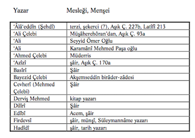
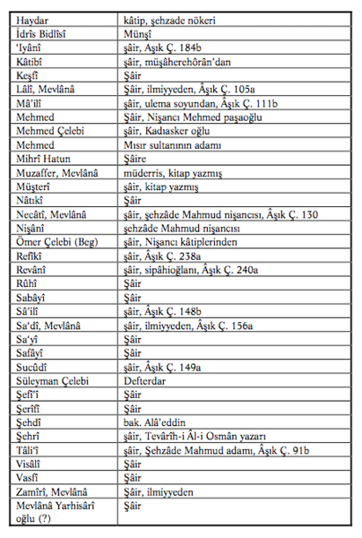
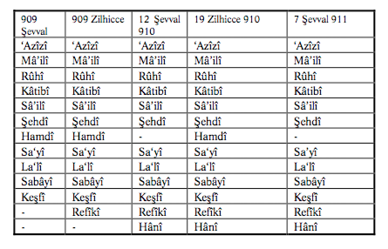
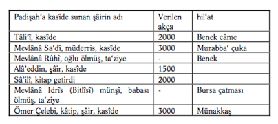
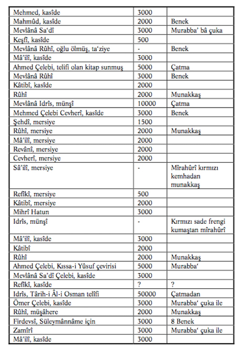
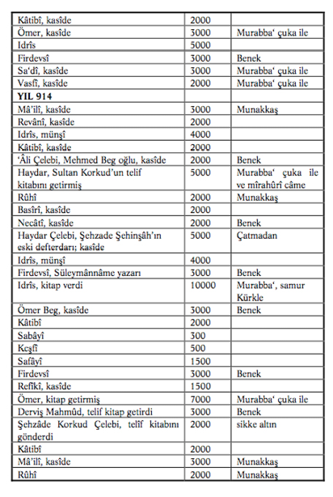
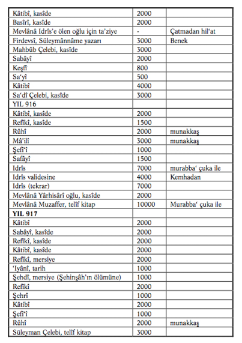

PATRİMONYAL DEVLET VE SANAT 1
1 Bu yazıda tam bir transkripsiyon kullanmadık. Ancak Arapça ve Farsça kelimelerde ayn harfi ters virgül (‘arz), hemze virgül (te’sir), uzun sesliler uzatma işareti ^ (dânâ) ile gösterilmiştir. Farsça izafetlerde daima (i) harfi kullanılmıştır.
Ma’rifet iltifâta tâbi’dir Müşterîsiz metâ’zâyi’dir
Genelde, bilim adamı ve sanatçı, belli bir toplumda egemen sosyal ilişkiler ve belli bir kültür çerçevesinde sanatını ifade eder. Osmanlı toplumu gibi patrimonyal türde bir toplumda, başka deyimle, sosyal onur, statü ve mertebelerin mutlak egemen bir hükümdar tarafından belirlendiği bir toplumda bu gerçek daha da belirgindir.2
2 Bkz. H. İnalcık, “Comments on Sultanisin: Max Weber’s Typifica-tion of Ottoman Polity”, Princeton Papers in Near Eastern Studies, (Princeton, 1992), 1-22.
Matbaanın geniş kitlelere okuma imkânı verdiği, böylece edebî ve ilmî eserlerin, yazarına geçimi için yeterince gelir kaynağı sağladığı dönem gelinceye kadar, bilgin ve sanatkâr, hükümdarın ve seçkin sınıfın desteğine muhtaç idi. “Sâhib-i Mülk” hükümdar; bilgin ve sanatkârın en önde gelen veli-nimeti, hâmisi idi. Max Weber’in belirttiği gibi, Ortaçağ’da, Do-ğu’da ve Batı’da, monarşilerde devlet; patrimonyal yapıda olup egemenlik gücü, mülk ve tebaa, mutlak biçimde hükümdar ailesine ait sayılırdı; ve yalnız onun lûtf ve inayetine erişenler, toplumun en şerefli ve zengin tabakasını oluştururdu. Hanedanlar arasında rekabet ve üstünlük yarışı, yalnız muhteşem saraylar, hadem ve haşemde değil; ilim ve sanatın hâmiliğinde de kendini gösterirdi.3
3 Yalnız Doğu’da değil, Avrupalı hükümdarlar karşısında da üstünlük iddiasında bulunan Muhteşem Süleyman’ın İmparator Şarlken’e karşı siyasi rekabeti ve Avrupalı artistler üzerinde patronajı hakkında bkz. O. Necipoğlu, “Süleyman the Magnificent and the Representation of Power in the Ottoman Habsburg-Papal Rivalry”, The Art Bulletin, 71 (1989 Eylül), 401- 427.
Patrimonyal devlette yüksek kültür, yalnız Yüksek Saray Kültürü olarak var olmuştur. Hükümdar sarayı ve ekâbir sarayları, toplumda şeref ve itibârın, servet ve becerinin tek kaynağı ve sığınağı idi. Osmanlı’da, en yüksek mimar, sarayın mimar-başısı, en iyi kuyumcu, sarayın kuyumcubaşısı ve en gözde şâir, padişahın ilgi ve lûtfuna lâyık görülen sultân’uş-şu’arâ idi. Bilgin ve sanatkâr; hükümdarın prestijini, sarayın nâm-u-şânını yüceltmek için gerekli ögeler sayılırdı. Bilgi ve sanatın koruyucusu olan hükümdarın, hakem sıfatını hakkıyla yerine getirebilmesi için kendisinin de, ilim ve sanattan payı olmak gerekirdi. Yüksek bir estetik ve sanat felsefesine sahip Medici’ler olmasa idi, Floransa’nın büyük sanatkârları elbette yetişmezdi.4 Divan sahibi şâir hükümdarlar olmasa idi, Türk edebiyatının büyük dehâları belki ortaya çıkmazdı. O dönemde, şaheserlerin çoğu, önemli ölçüde, seçkin sınıfın iltifatı, yüksek kültür ve duygu inceliği, sanatkârı korumaktaki ilgi ve heyecan ile açıklanabilir.
4 Özellikle bkz. L. Jardine, Worldly Goods: A New History of the Re-naissance, Baltimore: John Hopkins U.P. 1996; M. Hollingsworth, Patronge in the Renaissance ltaly: From 1400 to the Early Years of the Renaissance, New York: Bantam Doubleday 1996.
3a M.E. Subtelny, bkz. Aşağıda not 5.
“Kültür Patronajı”, Ortaçağ İran’ı ve Orta Asya’da çok gerilere giden bir gelenekti. Subtelny’e göre bu bölgede daha sonra Patronaj, Türk-Moğol devletlerinde askerî sınıf için yeni medeniyeti benimseme süreci olmuştur.3a 15. yüzyılda Semerkand, Herat, Tebriz, İstanbul ve Delhi’de ortak yüksek saray kültürü sayesinde sanatkâr, bir memleketten ötekine gittiği zaman aynı himâye ve anlayışı, aynı sıcak ve coşkulu karşılamayı buluyordu. Osmanlı sultanı; özellikle Orta-Asya ve Azerbaycan’da Türkçe ve Farsça’ya hâkim münşîleri, şâirleri, âlimleri kendi pâyitahtına çekebilmek için büyük fedakârlıklara hazırdı5. Fâtih Sultan Mehmed ve II. Bayezid, zamanın İranlı büyük şâir ve mutasavvıfı Molla Câmî’yi İstanbul’a getirmek için çok çaba harcamışlardır.
5 Osmanlı klasik dönem sanatının doğuşu üzerinde A. Kuran, M. Ro-gers, N. Atasoy’un bildirileri, özellikle G. Necipoğlu, “A Kanun for the State, A Canon for the Arts...”: Soliman Le Magnifique et son temps, yay. G. Veinstein, Paris 1992, 195-216.
İran ve Orta Asya’yı idaresi altında tutan Timurîler devletinin merkezi Herat; ikisi de büyük sanat patronu olan Abû Sa’îd Mirzâ (1458-1468) ve Hüseyin Baykara (1469-1509)’nın saltanat yıllarında İran-Türk dünyasının görülmemiş parlak bir medeniyet merkezi olarak yükselmiştir. Bu dönemde biri İran, öteki Türk kültürünü temsil eden iki büyük edebiyat ve düşünce devi, Abdurrahman Câmî (1414-1492) ve Ali Şîr Nevâyî (9 Şubat 1441-3 Ocak 1501) Osmanlı edebiyatı için örnek kabul edilmişlerdir. Fâtih ve II. Bâyezid, Hüseyin Baykara ile mektuplaşıyorlardı. Sultan Bayezid, Hüseyin Baykara’ya gönderdiği mektupta (Ferîdun Bey Münşeâtı, I, İstanbul 1274, 305-306) “muhabbet-i kadîmî”den sözediyor ve mektuplaşmanın devamı arzusunu bildiriyordu. Hüseyin Baykara cevabında Osmanlı Sultanına “halîfetu’llah fi’l-enâm”, ve “al-gâzî fî sebî-lillâh” diye hitâb ediyordu ve dostluğun pekiştirilmesi ve haberleşmenin sürdürülmesi arzusunu ifade ediyordu (a.g.y. 306-307).6
6 Bu konuda Timurîler devri Herat ve Câmî üzerinde üstad Z.V. To-gan ve H. Ritter’in islâm Ansiklopedisindeki makaleleri, III, 15-20 ve V, 429-442, ihmal edilmemeli; ayrıca, E. Yarshater, “Persian Poetry in the Timurid and Safavid Periods”, Cambridge History of iran, VI, ed. P. Jackson and L. Lockhart, Cambridge, 1986, 965-994; M. Sub-telny, “A Taste for the Timurid Period: The Persian Poetry of the Late Timurid Period”, ZDMG, 136 (1986), 56-79; İran ve Orta Asya saraylarında sanat için patronajın önemi hakkında özellikle, M. Sub-telny, “Socioeconomic Bases of Cultural Patronage under the Later Timurids”, International Journal of the Middle East Studies, 20 (1988), 479-505; L. Golombek ve M. Subtelny, (eds), Timurid Art and Culture, iran and Central Asia in the Fifteenth Century, Leiden 1992; ana dili Azerî (Türkmen) Türkçesi olan büyük İslâm musîkî nazariyatçısı, şâir, hattât Abdül-Kâdir Merâgî’nın Türkçe şiir parçaları hakkında bkz. Gönül A. Tekin, “Timur Devrine ait iki Türkçe şiir”, Harvard Ukrainian Studies, III/IV (1979-1980), 850-867; Timur’un Türkçe şiirle ilgilendiği hakkında a.g.m. 866. 5a B.F. Manz, The Rise and Rule of Tamerlane, Cambridge 1989.
15. yy. yüksek kültür merkezleri, Timur soyundan gelen hükümdarların payitahtları idi. Osmanlı ve Hint padişahları, bu hükümdarların saraylarını örnek tutuyor, orada yetişen veya “intisâb” eden bilgin ve sanatkârları kendi saraylarına çekebilmek için her türlü fedakârlığı göze alıyorlardı. Rönesans İtalya’sında şehirler arasında, daha sonra Avrupa sarayları arasında gördüğümüz rekabet, İslâm dünyasında da benzeri bir rol oynamıştır, ve incelmiş yüksek sanatın gelişimi ve niteliği üzerinde en güçlü etkiyi yapmıştır. Orta-Doğu’da da, bir hükümdar için en şöhretli bilgin ve sanatkârları sarayına çekebilmek, gerekirse onları zorla alıp getirmek olağan bir şeydi. Timur, istilâ ettiği her memlekette en şöhretli bilgin ve sanatkârları toplayıp Semerkand’a götürmüş,5a Yavuz Selim Tebriz ve Kahire’yi aldığında yüzlerce sanatkârı İstanbul’a sürmüştür7. Osmanlı patrimonyal saray kültürünün gelişmesinde, şiir ve inşâ alanında, hüsnihat ve nakkâşlıkta, para ve mevki vaadleriyle celb olunan veya “sürgün” edilen sanatkârların payı büyüktür8. Öyle ki, yerli Osmanlı-Türk sanatkârları, “Arap ve Acem”e verilen bu ayrıcalıktan dolayı şikâyetlerini açıkca dile getirmekten çekinmemişlerdir (bak. aşağıda). Le’âlî diyor (Latîfî, 290):
7 Tebriz’den sürülenlerin bir listesi için bak. İ. H. Uzunçarşılı, “Osmanlı Sarayında Ehl-i Hiref (Sanatkârlar) Defteri”, Belgeler, 11 (1981-1986), 24-65.
8 Fâtih Sultan Mehmed, Semerkandd’dan Alâeddin Ali Kuşçu’yu İstanbul’a çağırdığında o seçtiği ikiyüz kadar Orta-Asyalı ve İranlı âlimi yanında getirdi (Taşköprî-zâde, Şakâ’ik-i Nu’mâniyye tercümesi, Mecdi, İstanbul, H. 1269, S.183).
Acem’in her biri kim Rûm’a gelir Ya vezâret ya sancak uma gelir
Öte yandan, bir yerde kendini gösteren bir bilgin ve sanatkâr da, şân-u-şeref ve refahını, büyük ve zengin hükümdarların sarayında, lûtf ve inâyetinde arardı. Patronaj, himâye, böylece, iki yanlı işler; hem saray, hem de seçkin bilgin ve sanatkâr için nâm-u- şân kazanmanın tek yolu kabûl edilirdi.
Doğu’da ve Batı’da, patrimonyal hanedan devletlerinde, servet ve nâm-u- şân kaynağı, sarayın yanısıra hükümdara mensup toprak sahibi ricâl ve ekâbirdi. Batı’da, Rönesans İtalya’sında, servet kaynağı toprak ve tarım yerine ticaret ve sanayi alanlarına kayınca, yeni-zengin burjuva sınıfı feodal-patrimonyal efendilerin yerini almaya başladı. Âşikâr olarak böyle bir gelişme, Doğu’da gerçekleşememiştir.9 İtalya’da komün-şehir devletleri böyle bir gelişmeye sahne olurken, Doğu’da merkeziyetçi patri-monyal devlet yapısı gittikçe daha güçlü duruma erişiyor, bilgin ve sanatkâr, her zamandan ziyade saraya ve ricâl-i devlete bağımlı hale geliyordu.
9 Bursa terekelerine göre yaptığım bir araştırma, (“XV. Asır Türkiye İktisadî ve İçtimaî Tarihi Kaynakları, istanbul Üniversitesi iktisat Fakültesi Mecmuası, XV., 1953-1954, 51-57), bu zengin ticaret şehrinde dahi en zengin sınıfın, serveti arazi rantına dayanan “askerî”
sınıf olduğunu göstermiştir; Orta Asya’da aynı durum kanıtlanmıştır, bak. M.E. Subtelny, “Socioeconomic Bases” .
İlâve etmek gerekir ki, yüksek saray kültürü ile yerel halk kültürü arasında kopukluk üzerinde yapılan gözlem, Doğu kültür çevresi için de mutlak bir gerçek gibi alınmamalıdır. İlk Osmanlı beyleri, Babaî-Kalenderî dervişlerine, dinî-epik halk edebiyatına, bir kelime ile Türkmen kültür çevresine bağlı idiler. Sonraki yüzyıllarda, özellikle Fâtih Sultan Mehmed döneminde saray, Orta-Doğu kozmopolit kültürüne yöneldiğinde, bu Türkmen kültür geleneği etkisini sürdürmüştür. Kahire ve Tebriz’den gelen ulema, münşî-şâir ve mutasavvıfların yanında, Osmanlı hükümdarı her zaman popüler bir tarikat şeyhine saygı ve bağlılığını devam ettirmiştir.10 İstanbul saray ve camileri için Uşak’ta dokunacak halılarda, bazıları İranlı olan saray nakkaşlarının yaptıkları örnekler işlenmiş, İran saray halıların-daki desen ve motifler kullanılmış, böylece Uşak saray halılarında, geometrik Türkmen-Yörük motif ve düzenlemeleri ile birlikte İran motif ve desenleri egemen olmaya başlamış, halıcılıkta bir saray stili ortaya çıkmıştır.11 Bu olgu, sanatta saray patronajının başka bir kanıtı olarak kaydedilmelidir.
10 Şakâ’ik-i Nu’mâniyye’de ulemadan sonra tarikat meşâyihinin biyografileri ayrı bir kategori olarak verilmiştir.
11 O. Aslanapa, Türk Halı Sanatının Bin Yılı, İstanbul 1987; K. Erd-mann, Orientteppiche: 16.-19. Jahrhundert, Hannover, 1966; Saray halı motiflerinin halk dokumalarında kullanılışı hakkında bkz. B.B. Acar, Kilim, Zili, Sumak, Türk Düz Dokuma Yaygıları, istanbul: Eren Yay. 1982; J. Raby; “Court and Export”, Oriental Carpets, eds. R. Pinner and W. B. Denny, London 1986, 177-188; W. B. Denny “The Origin and Development of Ottoman Court Carpets”, 243-260; M. Fuad Köprülü-zade (Köprülü), “Milli Edebiyat Cereyanının ilk
Mübeşşirleri ve Divan-ı Türki-i Basit”, İstanbul 1928 ve şu önemli araştırma: F. Çağman ve S. Tanındı, “Osmanlı-Safavî İlişkileri Çerçevesinde Topkapı Sarayı Müzesi Resimli El-Yazmalarına Bakış”, As-lanapa Armağanı, İstanbul 1996, 37-76; Türk halk edebiyatının devamlılığı için bkz. M. Çavuşoğlu, “Fâtih Sultan Mehmed devrine kadar Osmanlı-Türk Edebi Mahsullerinde Muhtevanın Tekâmülü”, Kubbealtı Akademi Mecmuası, II-2 (1982), 31-43;
Osmanlı sultanları belli zamanlarda topladıkları ulema ve şu’arâ meclislerinde hakem rolünü oynamak yeteneğini, şehzâ-delik döneminde seçkin hocalardan aldıkları yüksek kültüre borçlu idiler.12 II. Murad’dan beri sultanların, şiirlerini toplayan birer divan tertib edecek kadar şâirlik yeteneği kazandığı bilinmektedir13.
12 Fatih Sultan Mehmed’in Manisa’da şehzâdeliğinde hocaları ünlü fıkıh âlimi Molla Hüsrev ve münşî nişancı İbrahim, askerlik-idare işlerinde lalası, Zaganos Paşa idi.
13 Şâir padişahların bir listesi ve şiir örnekleri için bkz. Tayyâr-zâde Atâ, Atâ Tarihi, I, İstanbul, 1291/1874; keza Şehrî-zâde Mehmed Sa’îd, Mahzenu’s-Safâ ve Kunz-i Dürer, yazma nüsha, Atatürk Kitaplığı, İstanbul, Muallim Cevdet yazmaları no. D. 74; “Şehnâmeci Ta’lîkî-zâdeye göre Osmanlı Pâdişahlarının Şâirlikleri”; Doktora Tezi, İstanbul Üniversitesi Edebiyat Fakültesi, 1989.
Bir kelime ile, belli bir sanat zevki ve anlayışına sahip patronun himâyesi altında sanatkâr, ona göre eser vermeye özenirdi. Muhteşem Süleyman döneminde Osmanlı klasik kültürü yüksek sanat eserleri vermişse, bunda bu Padişah’ın yüksek sanat anlayışının önemli bir payı vardır. Hattâ diyebiliriz ki, sanat ve bilim eserinin kalitesini ve sanatkârın şöhretini, çok kez hükümdar belirlerdi. Bir eserin “makbûl ve mu’teber olması” her-şeyden önce sultanın iltifatına bağlı idi.14 Osmanlı’da, kimse padişahın sarayından, yahut camiinden daha büyük ve şa’şaalı bir yapı yaptıramazdı. Sultânu’ş-Şu’arâ seçilmek, “in’âm” almak için şâirin, ilkin şu’arâ meclisine çağrılması, sultana bir kasîde sunması, takdir edilip bağışa lâyık görülmesi gerekli idi. Öte yandan, yüksek mevkilere çıkan şâirler (meselâ Necâtî) kendileri patron durumuna gelip birçok seçkin şâiri yanlarında bulundurmuşlardır.
14 “Kütüb-i mezbûre-i muharrere.... makbûle ve mu’tebere olmak,
hüsn-i nazar-i pâdişâh-i dûrbîn ile manzûr.... olmağa mevkûfdur”,
Şakâ’ik-i Nu’mâniyye Tercümesi (995 H.), İstanbul 1269H., 12-13.
Patronun özel ilgisine erişenler, onun “terbiyeti” sayesinde iyi mevkiler elde ederler, onun “mürebbâ”larından (yetiştirmelerinden) sayılırlardı. Yalnız sanatçılar için değil, genelde, Osmanlı patrimonyal toplumunda terbiyet, kulluk, intisâb sosyal ilişkilerin temeli olmuş, hem patron hem kul için gerekli bir sosyal bağ oluşturmuştur. Patron için şöhretini ve mevkiini yüceltmek, kul için hayatta kalmak, ilerlemek için bu bağlılık esastı. Bu patrimonyal prensip, patron-kul ilişkisi, Osmanlı devletinin temel yapı ve menşeinde görülür. Osmanlı Devleti, Osman Gazî’ye yoldaşlık-nökerlik yapanlarla ortaya çıkmıştı. Devlet, Osman’ın devleti, Osmanlı devleti idi. Osmanlı patri-monyal toplumunda intisâb ve patronaj, seçkin sınıfın her bölümünde, statü gruplarında, bürokraside, orduda, hattâ il-miyyede sosyal ilişkilerin ve hiyerarşinin temel prensibi idi. İlmiyyede, yüksek düzeydeki mollaların aile fertleri ve daniş-mendleri için yaptıkları iltimasa karşı aşağı derecedeki grupların tepkisi, zamanla geniş ölçülere varmıştır.15 Bürokraside, kâtip yetiştirmede, çırak-kalfa-usta sistemi, dolayısıyla patronaj egemendi. Askerî-idarî sistemde tayin ve terfiler, ancak en yakın âmirin arzı ve tavsiyesi ile mümkündü.16 Sanatkâr da bu genel patrimonyal sistemin dışında değildi.
15 H. İnalcık, “The Rûznâmce Registers of the Kadıaskers of Rumi-li...” Essays in Ottoman History, İstanbul: Eren,1998, 125-154
16 H. İnalcık, “Osmanlı Bürokrasisinde Aklâm ve Muâmelât”, Osmanlı Araştırmaları, I.
Patrimonyal devlette her türlü nimet ve mertebe, yalnız ve yalnız hükümdardan kaynakladığı için, buna erişmek isteyen nâmzetler arasında kıyasıya bir rekabet, hased, entrika ve yaltakçılık egemendi ve toplumun ahlâkını yahut ahlâksızlığını oluştururdu. Osmanlı Vekâyinâmeleri ve Şu’arâ Tezkireleri bu acımasız rekabet ve çekişmelerin hikâyeleriyle doludur. Fuzûlî, büyüklerin yanına varamamanın tesellisini, “hased ehli”nden uzak kalmakta bulur. Hükümdara yaklaşmanın, onun “hüsn-i nazarı” ile “manzûr” olmanın tek yolu, yakınlarından birinin himâye ve aracılığını sağlamaktır. Fuzûlî (Farsça Divan, s. 636) bunu bilir:
Mâ gilmân-i mâh-rûyânîm Mâh-rûyân hama gulâm-i şumâ
(Biz ayyüzlülerin kullarıyız Ayyüzlüler ise hep sizin kulunuzdur)
Böylece, patronla birey arasında “intisâb” edilecek nüfuzlu kişiler yer alır. Yaltaklanma ve intisâbın sanatla bağdaştırılmış, kurumlaşmış biçimi de kasîde sunmak, sultanı ve paşaları en abartılı parlak ifadelerle göklere çıkarmakta görülür. Fuzûlî, bu vadide Sultan Süleyman’a ve ricâle kasîdeleriyle ötekilerden farklı değildir. O, patrona şöyle hitâb eder:
Arzûy-i devlet-i pâ-bûs-i hüddâm-i darat Mî-rubâyad rûz u şab az dil karar az dîde hâb
(Senin kapındaki hizmetlilerin ayağını öpme devletine erişme arzûsu, gece-gündüz benim gönlümden huzuru ve gözümden uykuyu gidermiştir)
Patronun ilgisini sürdürmek için şâir, öteki kullar gibi, son derece dikkatli olmak, onun hoşlanmayacağı şeylerden kaçınmak zorundadır. Bu yüzden Fâtih’in gazabına uğrayan ve sürgün edilenler arasında Mevlânâ Abdülkâdir, Nahîfî, Velîyüddîn oğlu Ahmed Paşa’yı zikredebiliriz.
II. OSMANLI SARAY KÜLTÜRÜNÜN GELİŞMESİ VE OSMANLI DİVAN ŞU’ARÂSI
Konya Selçuklu sultanları, bütün Yakın-Doğu sarayları gibi, seçkin şâirleri himâyede geri kalmamışlardır. Selçuklu devletinde resmî dil Farsça idi; fakat sarayda dahi Türkçe konuşulduğu anlaşılıyor. 13. yy. sonlarında Selçuklu Sultanı III. Alâeddîn (1297-1302?) Horasanlı Hoca Dehhânî’den (XIII. yy. ikinci yarısı) Farsça bir Selçuklu Şehnâmesi yazmasını istemiştir, fakat aynı zamanda Dehhânî’nin sultana Türkçe kasîdeler sunduğunu da biliyoruz.17
17 Dehhânî’nin I. Alâeddîn (1220-1237) döneminde Anadolu’ya geldiği tezi için bkz. H. İlaydın, “Anadolu’da klasik Türk Şiirinin Başlangıcı”, Türk Dili, 277 (Ekim 1974), 765-775.
15. yüzyılda İslâm dünyasında, Orta Asya ve İran’da, Timu-rîlerin temsil ettiği yüksek ilim ve sanat rönesansı,18 Osmanlı’ lara örnek olmuştur. Orta Asya’da Timurlular döneminde ortaya çıkan göz kamaştırıcı medenî gelişme, sanat kollarında erişilen eşsiz yaratıcılık ve mükemmellik, tarihçileri bu dönemi İtalyan Rönesansı ile kıyaslamaya götürmüştür. Subtelny, bunun temelinde, o zamanda zengin patronların yükselmiş olması olgusunu görür.19 Bu patronların başında, bir Uygur bahşı ailesinden gelen Ali Şîr Nevâyî gelmektedir. Nevâyî [kendisi Hüseyin Baykara’nın musâhibi (mukarrebi) olmuş] bir bürokrat sıfatıyla Divan-i A’lâ emîrleri arasına alınmış, daha önce ailesine ve kendisine soyurgal olarak tam muâfiyetle yapılan zengin toprak bağışlarıyla elde ettiği muazzam serveti bilim, edebiyat ve mimarî eserlerini teşvik etmek ve yaptırmakta harcamıştır.20 Onun cömertliği dillere destan idi. Klasik İran edebiyatı ve düşüncesinin son büyük temsilcisi Abdurrahman Câmî (14141492), tüm İslâm hükümdarlarının davette yarıştıkları İslâm dünyasının Voltaire’i idi. Fâtih Sultan Mehmed 5000 altın armağan göndererek onu İstanbul’a çağırmış, II. Bayezid onu Osmanlı ülkesine getirmek için büyük çaba harcamıştır. Bâye-zid, Câmî’ye gönderdiği mektupta (Ferîdûn, I, 361-362) onu “nûru’l-hak ve hakîkat” ve “nakşbend-i i’tikâd” diye anıyordu. Câmî cevabında, “bahşîşhây-i şeh haddî na-dârand” (Sultanın bağışlarına sınır yok) diye bildiriyordu. Osmanlı sultanı, Câmî’ nin gönderdiği eserleri (“külliyât-i câmi’il-kemâlât”) (belki Na-fahât) aldığını bildirerek kendisine bin flori altın gönderdi (Fe-rîdûn, I, 363). Câmî cevabında:
18 Bkz. J. Rogers, “Centralization and Timurid Creativity”, Oriento Moderno, N.S. XV (LXXVI), 535-550.
19 Bkz. yukarıda not 5’de a.g.m. Timurlular Rönesansı tanımlamasına karşı bkz. J. Aubin, “Le mecenat timouride â Chiraz’’, Studia islami-ca, 8 (1957); Osmanlılar’da Soyurgal, temliknâme olup Osmanlı patronlarının zenginlik kaynağı da çoğu kez vakfa çevirdikleri arazi temliklerinden geliyordu.
20 Bkz. Subtelny’nin yukarıda not 5’de adı geçen incelemeleri; özellikle “Socioeconomic Bases”, 490-492.
Câmî kucâ ‘atây-i Şeh-i Rûm az kucâ k’în lûf-i gayb mî-rasidaş az reh-i’umûm
diye Osmanlı sultanının lûtfuna şükrânını ifade ediyordu. Kuşkusuz, Osmanlı Sultanı, İran ve Orta-Asya ortak yüksek kültürünün en tanınmış temsilcisi Câmî’ye gönderdiği mektup ve bağışlarla, bu kültürün bir hâmisi, patronu olduğunu göstermek istiyordu. Nakşibendîliğin kurucularından alçak gönüllü İranlı mutasavvıf, bu armağanları, “bâ-anwâ’-i hulûs-i dervîşâ-ne” du’â ile karşılıyordu. Osmanlı’nın Fâtih Sultan Mehmed ile başlayan en ileri bir İslâm imparatorluğu olma iddiası sonucu olarak, bu bölgelerden âlim, sanatçı, münşî ve şâirler davet ediliyor ve el üstünde tutuluyordu.21 Sehî Beg’e göre Fâtih, “Arab’dan ve Acem’den ehl-i ma’rifet adına olan kimseleri buldurub getürdüb fevk’al-hadd ri’âyet ettirirdi.”22 Fâtih, Yeni (Topkapı) Sarayını “Arab ve Acem ve Rûm’dan mâhir mimarlar ve mühendisler getürüp” yaptırdı.23 Kâtiplerden Lâlî, İran’ da uzun zaman kalmış, dönüşte kendisini Acem (İranlı) diye tanıtmış, Fâtih’e musâhib olmuş, gerçek ortaya çıkınca kendisine verilen zâviyedârlık ve maaş elinden alınmıştır. Birçok Osmanlı şâiri (meselâ Halîmî, Câmî-i Rûmî) İran’a gitmiş, dönüşte üstad olarak karşılanmıştır.
21 M. Çavuşoğlu, a.g.m.; H. Sohrweide, “Dichter und Gelehrten aus den Osten im Osmanischen Reich’’, Der islam, 46 (1970), 263-302.
İtalya dışı Avrupa ülkeleri Rönesans’ında İtalyan üstadlar nasıl örnek alınmışsa, Orta-Asya ve İran şâirleri, özellikle Hâ-fiz, Sa’dî, Hakânî, Nizâmî, Nevâyî ve Câmî, Osmanlı şâirleri için birer örnek ve ilham kaynağı olmuştur.24 Başka deyimle, nasıl bir Fransız veya Alman Rönesans’ından söz ediyorsak, İslâm dünyasında da ortak saray kültürü, Orta-Asya, Osmanlı ve Hint’te kendine özgü bir özellik, bir üslûp orijinalliği kazanmıştır. Bunu minyatürde belirgin biçimde görebiliriz. Fârisî edebiyatında derin bilgisi olan Velîyüddîn-oğlu Ahmed Paşa için Latîfî der ki, Farsça şiirlerden aldığı mânâlara “elfâz-i Rû-mîden libâs ilbâs” edip “mahbûb-i Rûmî-i ‘işve-sâz” göstermiştir (Tezkire, A. Cevdet yay. 77). Böylece, bazılarına göre Ahmed Paşa, ancak bir “mütercim”di. Farsça bilmeyen, gerçek şâir sayılmazdı (Âşık Çelebi, 277b).
24 Bkz. M. Çavuşoğlu, “Kanuni Devrinin sonuna kadar Anadolu’da Nevâyi Tesiri Üzerine Notlar”, Atsız Armağanı, İstanbul, 1976, 75-90
Tezkirelerde, Osmanlı şâirleri İranlı şâirlere kıyas edilmiştir. Bu gibilerin, aynı zamanda Farsça şiirler yazma gücünde oldukları, bir üstünlük nişânesi olarak belirtilmiştir.
Herhalde, klasik Osmanlı divan edebiyatı, daima İran klasik edebiyatıyla karşılaştırmalı olarak incelenmelidir. Ancak böyle bir yöntemle, Osmanlı şâirlerinin ne derece etki altında kaldıkları, ne derece orijinalliğe sahip oldukları ortaya çıkarılabilir.25 Latîfî, (Tezkire, 230) bunu kısmen yapmıştır; meselâ o, İranlı üstadların etkisinde kalmayan Nihâlî’de bir “tarz-ı hâss” bulmuş, “Rûm’da değil, belki Arab ve Acem’de ve Pehlevî dilinde bu üslûba şiir demiş kimse yok”, hükmüne varmıştır.
25 Böyle bir araştırmaya örnek olarak bkz. Gönül Alpay, “Yûsuf Emî-rî’nin Beng ü Cagır adlı Münazarası”, Türk Dili Araştırma Yıllığı-Belleten, 1972, 103-125
Şunu da belirtmek gerekir ki, Fâtih döneminde İslâm devletleri arasında birincilik iddiasında bulunan Osmanlı devle-tinde,26 İranlı şâirlere karşı bir üstünlük ve yarışma eğilimi belirmiştir. Latîfî (Tezkire, 157) şâir Zâtî’yi, Câmî ve Nevâyî’den üstün bulur. 15. ve 16. yy. Osmanlı şiirinde bilinçli, bir “tâze”, orijinal üslûp arayışları görülür. Bu şâirler, Türkçe’ye özgü deyimler ve atasözleri kullanarak orijinal bir üslup yaratma çabası göstermişlerdir (Latîfî, 300-301). Gerçekte, konularını Nizâ-mî’nin hamsesi gibi Farsça edebiyattan seçen büyük Osmanlı şâirleri, bazen İranlı örneklerini gölgede bırakan orijinal yapıtlar ortaya koymuşlardır; bu arada “kudemâdan” Şeyhî’nin Hüs-rev ü Şîrîn’i, Fuzûlî’nin Leylâ ve Mecnûn’u özellikle anılmalıdır. Sehî, Latîfî ve Âşık Çelebi, tezkirelerinde, bu orijinal üslûbu, daima, “tarz-ı hâss”, “tarz-ı mahsûs”, “tâze” diye överler.
26 Bkz. “Mehmed II”, (H.İ.) islâm Ansiklopedisi (Milli Eğitim Bakanlığı).
Bu vadide ilk büyük Osmanlı şâiri, kuşkusuz, 15. yy. başlarında ortaya çıkan “kudemâ”dan Şeyhî’dir.27 Şeyhî kendisi de, gençliğinde İran’a gitmiş, tasavvufta derinleşmişti. Onun Hüs-rev ü Şîrîn’ini, Latîfî (Tezkire, 215-216) eşsiz bir eser olarak “ol mertebeye ermiş yoktur” diye över ve Türkçe mesnevî tarzını o yaratmıştır, der.
27 A.N. Tarlan, Şeyhî Divânını Tetkik; M. Çavuşoğlu’na göre (a.g.m. 43) “İrankârî” şiir çığırını Şeyhî açmış.
Ancak Fuzûlî bile, Türkçe şiir üslûbunda pek rahat değildir; der ki: (Türkçe Divan, Mukatt a’ât, no. X, 481).
Nazm-i nâzik Türk lafziyle iyen düşvâr olur
Mende tevfîk olsa bu düşvârı âsân eylerem
Bununla beraber Fuzûlî’nin Türkçe (Türkmen-Azerî) deyimlerini, 16. yy. İstanbul’unda “acîb” bulurlar (Latîfî, 265). 13501450 yıllarında “kudemâ”,28 Türkçe sözcük ve deyimleri sık sık kullanmakta idiler; 1450’den sonra Farsça, Arapça lûgat ve deyişler, şiirde “zîver elfâz” sayılarak gittikçe yaygınlaşmış, bazılarınca “kudemâ”nın Türkçesi “Oğuzâne ve kûhiyâne”, “ga-rîb elfâz” gibi görünmüş; “Türkî ta’bîrât” köylüye ve dağ kabilelerine özgü sayılmıştır. Gerçek bir edebiyat tenkitçisi olan La-tîfî (Tezkire,216), buna karşı çıkarak, her edebî eserin kendi dönemi içinde değerlendirilmesi gerektiğini belirtmiş, “bir nev-peydâ zuhûr ede, meyân-i nâsda mer’î ve mergûb olub köhneler kadr ü ragbetten düşer”, gözlemini yapmıştır. Latîfî’ye göre, Fars edebiyatını taklid eden Nizâmî-i Karamânî, özellikle Velî-yüddîn oğlu Ahmed Paşa ile divan şiirinde yeni üslûp üstün gelmeye başlamıştır; Ahmed Paşa’nın divânı, “Divân-i Hâfız ve Câmî gibi her ne kadar ki okunsa yine ter ü tâzedir”, der. Latîfî, ondaki ve Necâtî’deki tâzeliğin, orijinalliğin, bir bakıma Türkçe’deki “durûb-i emsâli” (atasözlerini) kullanmalardan ileri geldiğini de belirtmekten geri kalmaz. “Zîrâ” der, “mezkû-re gelince sâbıku’z-zikr olanlar şi’ri Fürs divânlarından tetebbu’ ederlerdi. Necâtî Beg’e gelince şi’r, mesel-âmiz oldu ve herkes hasb-i hâline müte’allik anda darb-i mesel buldu”.
28 Fâtih döneminde şâirlerin Acem karşısında kendine güvenle yeni aşama oluşturduğu hakkında bkz. M. Çavuşoğlu, “Fâtih Mehmed Devrine Kadar Osmanlı Türk Edebi Mahsulllerinde Muhtevanın Tekâmülü”, Kubbealtı Akademi Mecmûası, XI-2 (1982), 31-32. Bu eşitlik, hattâ üstünlük bilinci ilkin Orta Asya’da kuvvetle belirmiştir, bkz. A.E. Bodrogligeti”, “Klasik Orta Asya Türk Edebiyatı” Toplumsal Tarih, 54(1992 Haziran), 57. H.İlaydın, “Anadolu’da Klasik Türk Şiirinin Başlangıcı”, Türk Dili, 277 (ekim 1974), 765-774; “Divan Edebiyatı” islâm Ansiklopedisi (TDV), (Ö. F. Akün), 389-428; Âşık Çelebi’ye göre, (278a) mesnevîde Şeyhî, kasîdede Ahmed Paşa ve gazelde Necâtî kendilerinden önce gelenleri unutturmuşlardır.
Kasîde Sunma ve İşret Meclisleri
Doğu edebiyatında şâirin himâye, inâyet arayışı, özel bir düzenleme ve kalıp içinde patrona sunduğu övgü, kasîde nev’i içinde ifadesini bulur.29 Kasîdeler, başta, öbür dünyada Tan-rı’nın rızasını, Peygamberin, velilerin şefâatini ve bu dünyada patrimonyal siyasî güç sahiplerinin himâye ve inâyetini kazanmak için yazılırdı.
29 Kaside hakkında son zamanlarde esaslı bir eser yayınlanmıştır: Qa-sida Poetry in Islamic Asia and Africa, I. Classical Traditions and Modern Meanings, eds. S. Sperl and C. Shackle, Leiden:E.J.H. Brill, 1996; eserde kasîde ve patronaj için bkz. S.P. Stetkevych, 35-64; M. Glünz, 183-204; yayınlardan beni haberdar eden değerli edebiyat tarihçilerimiz Prof. Günay Kut ve Dr. Mehmet Kalpaklı’ya burada teşekkürü borç bilirim.
Her biri şehzâdeliğinde seçkin hocalardan “fenn-i şi’r”de yetişen, şiirleri müretteb bir divan dolduran Osmanlı padişahları, gerçekten, iyi şiiri heyecanla takdir edebilen yetenekli pat-ronlardı.30 Yalnız muşâ’ara meclislerinde dinleyerek değil, elden ele dolaşan şiirleri okur ve sahibine ihsan ve atâda bulunurlardı. Sehî’nin (77b-78a) Sa’yî hakkında yazdığı ilginçtir: II. Bayezid onun “bir gazelin bulub tab’-ı şeriflerine gâyet hoş gelüb bu gazeli diyeni bulun, deyü emr” etmiş ve kendisine divitdârlık hizmetini vermişti. Ama kayda değer ki, Sa’yî “bana mansıb gerekmez” diye başlangıçta bu iltifatı reddetmiş, ancak Sultan Selim zamanında saray içoğlanlarına hoca olmayı kabul etmiştir.
30 Osmanlı şiirinde patronaj konusu W.G.Andrews’in basılmamış doktora tezinde ayrı bir bölüm halinde incelenmiştir. Andrews, La-tîfî’nin ilkin dünya görüşünü (Weltanschauung) tespit edip eleştirilerini bu çerçevede inceleme denemesinde bulunmuştur, Latîfi, Prof. Andrews’e göre (Tez, 3, 55, 103), maddî ve spirituel değerler arasında bir denge ister ve zamanında maddiyata önem verildiğinden yakınır. Prof. Andrews, Osmanlı şâirinin davranış ve ölçütlerini (standard) tespit ile Osmanlı şiirini analiz ve değerlendirmede yeni bir me-tod denemesinde bulunmuştur. Sonuçta, Osmanlı şiirinin İran örneklerinin bir taklidinden başka bir şey olmadığı düşüncesinde olan eski ve yeni araştırıcıları uyarmaktadır.
En büyük iltifat, padişahın musâhibi olmaktı. Musâhib, başka bir deyişle nedîm, karîn, hükümdarın arkadaşı gibi daima yanında bulundurduğu, özel yaşamına ortak yaptığı, danışmanı ve sırdaşıdır. Fâtih Sultan Mehmed ile musikî ilminde (ilm-i edvâr) sivrilmiş Mevlânâ Abdülkâdir arasındaki ilişki bu bakımdan ilginçtir. O, Vezirâzam Mahmud Paşa’nın kıskançlığını çekecek kadar Sultan ile yakınlık peyda etmişti. İran’da ilm-i beyânda ve özellikle musikîde üstad olan Nahîfî (Mevlânâ Ş emseddin), Fâtih’in yanından ayırmadığı bir musâhibi olduğu halde bir yanlış hareketi üzerine saraydan atılmış, Bursa’da uzlete çekilmiş, geçimini sağlamak için büyüklere Arapça, Farsça ve Türkçe kasîdeler göndermeye başlamıştır. Selim’in musâhibi âlim- şâir Halîmî Çelebi’nin yaşamı musâhibler için iyi bir örnektir. İran’da ve Arabistan’da uzun yıllar bulunmuş olan Halîmî’yi Selim; Trabzon’da vali iken “musâhebet-i ilmiyye ve mükâleme-i ma’neviye için” yanına getirtti, ve saltanat tahtına geçtikten sonra da en yakın arkadaşı gibi yanında tuttu. “Pâdişâhın mizâcına girmiş, meşrebi alışmış ve kevkebi barışmış idi. Seferde ve hazerde hemdem ve gamküsâr ve ismen ve resmen münâsebeti var idi” (Latîfî, 134). Devlet büyükleri, önemli işleri onun aracılığıyla padişaha arz ederlerdi. Halîmî, Fârisî divan sahibi padişah için “Fârisî ve Arabî ebyât-i müşkile ve mu’ammâdan” ne varsa kendisine çözümlerdi. Halîmî, kendi şiirlerini gizli tutmuştur.
Kanunî Süleyman ile ulemadan şâir Bâkî arasında da buna benzer bir yakınlık kurulmuştur. Hayatının ilk döneminde güçlük çeken Bâkî, Sultan Süleyman’ın iltifatına eriştikten sonra onun musâhibi olmuş, en yüksek makamlara getirilmiştir. Süleyman, iltifat ve iltimasta ölçüyü aşıp onu şeyhülislâmlığa getirince, ulema dayanamamış, karşı çıkmışlardır. Onu kıskananlar, nihayet III. Murad tahta çıktığında, medrese hiyerarşisinde en yüksek derece olan Süleymaniye müderrisliğinden azlettirdiler.
Saray “hâs” bahçelerinde veya kasr (köşk)larda “halvette” düzenlenen geleneksel işret meclisleri şâir, mutrib, hânende gibi sanatçıların hükümdar önünde kendilerini göstermek fırsatını elde ettikleri bir yarışma meydanı oluştururdu. Firdevsî, Şehnâme’de (1000 tarihlerinde) kadîm İranlı hükümdar Hüs-rev’in verdiği işret meclislerini uzun uzun tasvir eder (N. Lugal çevirisi; IV, İstanbul 1994, s. 194, 275-276, 299, 330, 332, 389-390). Bir zafer veya başka vesilelerle süslenmiş saray bahçe ve kasrlarında tertib olunan bu ziyâfetler, üç gün üç gece, bazen bir hafta sürer, “nahiller dikilir, mis kokuları içinde güzel çalgıcılar çalarken peri yüzlü sakîler misafirlere yıllanmış şarap sunar”. Herkes sarhoş olur; zafer hikâyeleri dinlenir, şâirler karşılıklı en güzel şiirlerini söyler, muşâ’ara ederler. Firdevsî, böyle bir mecliste rakibi şâirler önünde Sultan Mah-mud’un takdirini kazanır. Selçuklu sultanı Alâeddîn’e kasîde sunan Hoca Dehhânî, “şâhlar-şâhı’nın çalgılı, içkili zengin bezmler”inden söz eder.31 Yine böyle bir işret meclisinde Anadolu Selçuklu sultanı bir kasîde için şâir Zahîreddin’e beş nefer güzel kul bağışlamış, I. İzzeddîn Keykâvûs (1210-1220) Sinop fethi üzerine düzenlenen bir işret meclisinde nedîmlere ve şâirlere in’âmlarda bulunmuştur.32 Osmanlı kaynakları şâirlerin çoğu kez bu gibi işret meclislerinde hükümdarın takdir ve lûtf-larına eriştiklerini belirtirler.33 Hükümdar hizmetindekiler arasında patrimonyal ilişkileri pekiştiren sosyal bir kurum olarak işret meclisleri, şölenler ve toylar Avrasya Türk-Moğol devletlerinde hayatî sosyal bir fonksiyona sahipti. K. Jettmar’a göre34 “en ince ayrıntılarına kadar düzenlenmiş içki âlemleri” hükümdarın şöhret ve prestijini yükseltmek için yapılan bir çeşit âyin (ritual) hükmünde idi. Osmanlılar’da haftalarca süren muhteşem sûr-i hümâyûnlar (pâdişâh düğünleri) bu geleneğin ne kadar önem taşıdığını kanıtlayan olaylar olup görkemli sûr nâmeler’de yaşatılmak istenir.35 Bu işret meclislerinin, hükümdarın ve sarayın hayatında nasıl hayatî bir yer tuttuğunu ayrıntılı tasvirlerle İbn-i Bîbî’nin tarihinde görüyoruz: Alâeddîn Key-
31 Ibn-i Bîbî, El-Evâmiri’l-’Âlâiyye, Tıpkıbasım: A.S. Erzi, Ankara 1956, 459-461; İlaydın, a.g.m., 766, onun I. Alâeddin (1220-1237) döneminde geldiğini ileri sürüyor.
32 İbn-i Bîbî’den Yazıcızâde, Tarih-i Âl-i Selçuk, Topkapı S.K. nüshası, Revan 1390, 78-81, 137.
33 Şakai’k-i Nu’maniyye, 198-199, şu’arâ çevreleri üzerinde bkz. H. İpekten, “Türk Edebiyatında Edebi Muhitler, XV-XVI. Asırlar”, İ.Ü. Edebiyat Fak. Doçentlik Tezi, 1969; İ. Pala, Şiirler, Şairler ve Meclisler, İstanbul 1997; A.A Şentürk, XVI. Asra Kadar Anadolu Sahası Mesnevîlerinde Edebî Tasvirler, istanbul 2002; C. Rıdvan, Türk Edebiyatında Sakinâmeler ve işretnâme, Ankara 1998; N. Atasoy, Hâs-bahçe, İstanbul 2002.
34 The Art of the Steppes, New York, 1967, 240.
35 Metin And ve Ö. Nutku’nun konu üzerindeki önemli eserlerinden sonra son kez, Nurhan Atasoy, Surname-i Hümayun, İstanbul: Koç-bank 1997. Rönesans İtalya’sında B. Castiglione’nin yüksek sosyetede etiket ve davranışları tespit eden ünlü Il Cortegiano’suna muadil bir eser, Mustafa Âlî’nin Mevâ’idü’n- Nefâ’is fî Kavâ’idi’l-Mecâlis’idir (Yay. M. Şeker, Ankara: TTK,1997). Âlî bu eserde, işret meclisi (347 -349), şâirler (356), toplantı kuralları (394) ve sultanın bağış yapması (391-394) hakkında izlenecek kuralları bildirir; ayrıca M. Âlî, Ca-mi’ul-Buhûr der Mecâlis-i Sûr, Yay. A. Öztekin, Ankara 1996.
kubad’ın işret meclisi kuruldu.... l’al şaraplarla ve dürlü
dürlü nakiller (nahil) birle ârâste edüp döşediler ve mutribler hezâr destân gibi elhân-i cân-fezay birle surûda şuru’ kıldılar ve câm-i şarâb içmeye ve barbut ve rubâb istimâ’ına meşgul oldular” (Yazıcızâde çevirisi, 170, sık sık yapılan bu işret meclisleri için keza bkz. s. 140-151, 117). Bir defasında sultan meclis-i işrette “ber sebîl-i imtihan heriflere (sanatkârlara) eyit-ti ki, yerin adını (Kayseri ve Aksaray) ol beyitlere telfîk etsun” dedi, münşî Şemseddîn’inkini çok beğendiğinden mansıbına ilâve yaptı.
Bu işret meclisleri bazı sultanların sarayında sık sık toplanırdı. Bütün kaynakların “gâyet mertebede ‘âyyâş” olduğunda birleştikleri divan sahibi II. Murad, herhalde böyle bir mecliste sarhoşken şu Hayyâmâne kıtayı demiştir (Sehî, 95).
Sâkî getür getür yine dünkü şarâbımı Söyle dile getür yine çeng ü rebâbımı Ben var iken gerek bana bu zevk bu safâ Bir gün gele ki görmiye kimse türâbımı
Paşalar da işret meclisleri düzenlerdi. Fâtih’in fâzıl vezîri Mah-mud Paşa’nın şu’arâ meclisleri ünlü idi. Fuzûlî, hâmisi olup kasîde sunduğu Bagdad valisi Üveys Paşa için “ehl-î ‘işret”tendi der. Sâkînâme’de (677):
Beyâ sâkî âb-i âtaş-mizâc k’ez o cümle dard dâred ilâc
(Sâkî, o ateş içeren şarabı getir ki, o her derde devâdır)
derken, herhalde mistik sarhoşluğu anmıyordu. Fuzûlî, divanlarının girişlerinde böyle görkemli saray işret meclislerini tasvir ediyor, sultanlar ve şâirlerle paylaşamadığı bu zevklerden yoksun, kendi “külbe-i ahzânına” sığınıyordu. Şu’arâ oldukça serbest bir yaşam sürerlerdi (bak. Halîlî, Melîhî, Gazâlî’nin yaşamı: Latîfî, 254, 315, Latîfî kendisi hakkında, 298). Onlar hakkında ulemanın görüşü Abussu’ûd’un bir fetvâsında yansımıştır (Âşık Çelebi, 16a). Şâirler için şarap, sûfîler için haşîş mubâh idi (bak. Fuzûlî, Bang u Bâde).
Bir eser veya kasîde sunan yazar sahibine, patronun inâyeti türlü biçimlerde kendini gösterir. Sultan mesleğine göre, münşî ise kâtipliğe, ulemadan ise müderrislik, kadılık gibi bir ilmiyye mansıbına veya vakıf hizmetine tayin eder; asker ise timar, zeâ-met veya hâssına terakki verir. Kasîde sunan şâirlere câ’ize, çoğu zaman gümüş akça (nadiren altın sikke) olarak ve/veya yünlü veya ipekli hil’at verilirdi. Divan dilinde ulema ve şâirlere yapılan para bağışına, in’âm, câ’ize, hil’ata câme denir. Genelde câ’ize, 1000 ilâ 3000 akça (20-60 altın) arasında değişirdi. Bu bağışların genel devlet hazinesinden çıktığı anlaşılıyor (bak. İleride İn’âm Defterleri). Hertürlü kişisel masrafı yapmak üzere Padişah’ın cebine verilen para, 1567-1568 malî yılında 31 milyon 466.314 akçaya varmıştı. (Bunun 30 milyonu Mısır’dan her yıl gönderilen irsâliye 500 bin altın, 850 bin akçası hergün hazineden verilen ceyb-i hümâyûn harçlığı ve 616.314 akçası, saray bağ ve bahçelerinden satılan mahsul karşılığı idi).36
36 Ö. L. Barkan, “954-955 (1547-1548) Malî Yılına ait bir Osmanlı Bütçesi”, i.Ü. iktisat Fak. Mec., XIX-1/4, 307.
İran (çoğunlukla Azerbaycan)’dan gelen Türkçe-Farsça konuşan ve yüksek saray kültürünü temsil eden hüner sahiplerinin Osmanlı sarayına nasıl intisâb ettiklerine dair ayrıntılı bir anlatımı, Hünernâme yazarı Azerî (Türkmen) Seyyid Lokman’ dan öğreniyoruz. Sultan Süleyman’ın İran seferi için Halep’te kışladığı sırada Lokman, babasıyla beraber memleketini bırakıp Osmanlı ülkesinde, Hasan-IKeyfte tîmâr-eri olan amcası yanına gelmişti.37 Oradan Halep’e gelip Şemsî Paşa’yı buldular. Paşa, Lokman’ın babasına büyük iltifatlar gösterdi. Kendisi seçkin bir münşî ve şâir olan Şemsî Paşa, “tekmîl-i kemâlâta masrûf tâ’ife-i şu’arâ ve bulegâ ile ülfeti olmağla”38 Lokman’ı muşâ’ara meclisinde Türkçe şiir söylemeye teşvik etti. Paşa, Lokman’ın Sultan Süleyman’ı öven bir gazelini padişaha göstermeye lâyık buldu. Gazelinde Lokman şöyle ihsan ister:
37 Seyyid Lokman, Hünernâme, 43; eser Zekeriya Eroğlu tarafından yayına hazırlanmaktadır: Yüksek Lisans Tezi, Boğaziçi Üniversitesi, Türk Dili ve Edebiyatı Bölümü, 1998.
38 Kınalı-zâde Hasan Çelebi, Tezkiretü’ş-Şuarâ, yay. İbrahim Kutluk,
I, Ankara: TTK, 1978, 422.
Çü bî-tâb oldı cûdundan zer ü sim ü güher şâhâ Sarardı zer bozardı akçe odlar düşdü mercâna
956/1549 baharında Sultan, Diyarbakır tarafına geçip Elmalu Yurdu’nda dinlenirken, Şemsî Paşa gazeli kendisine sundu. Padişah çok beğendi ve yüz altın câ’ize bağışladı ve Diyarbakır evkaf “zevâyid”inden maaş (“birkaç pâre vazîfe”)39 bağlanmasını emretti. Bu gelir sayesinde genç Lokman, kendini ilim tahsiline verme imkânı buldu. Sultan Elmalu menzilinde, şu matlaı sefere beraberinde gelen şâirlere gönderdi:
39 Din adamlarına verilen aylığa vazîfe, cihet, veya idrâr denir.
Ahumla nâle gulgulesin inleyen bilür Çeng ü çegâneyi lûlesün dinleyen bilür Şemsî, Haydar Remmâl, Hayâlî, Sehâbî, Bîdârî ve Lokman herbiri bir beyitle gazeli tamamladılar. Lokman’ın beyti şudur:
Eyyüb kıssasın dime her dinleyen bilür ‘Âşık gibi belâya düşüp inleyen bilür
Nazîre Sultana arz olunduktan sonra herkese pâyesine göre üçbinden onbin akçaya kadar câ’ize bağışlandı. O mecliste bulunan bazı “tâcirler” neden daha fazla verilmediğinden söz edince, Lokman yapılan bağışın yeterince büyük olduğunu söyleyerek onları susturdu. Şemsî Paşa, Lokman’a aferin deyip kendisine ayrıca hil’at ve câ’ize verdi. Lokman bu olayı, kendisinin padişah hizmetine alınmasının başlangıcı olarak anar. Sonraları Hünernâme’de, Mısır defterdarlığına atanması isteğini, kapalı biçimde anlatmıştır.
Şemsî Paşa gibi büyük bir münşî ve şâir olan Nişancı Celâl-zâde Mustafa da, birçok kabiliyetli şâiri padişaha tanıtmak ve onların refahına yardım etmekle tanınmıştır. Celâl-zâde, Fu-zûlî’nin de hâmisi görünmektedir (bkz. aşağıda Şikâyetnâme üzerindeki bölüm).
Sanatçılar, patronun gözüne girmek için başkalarından daha mükemmeli ortaya koyma çabasındadırlar, böylece patronaj sanat bakımından gerçekten olumlu bir rol oynar. Ama yukarıda belirttiğimiz gibi, bu sonuç; ancak patronun kendisinin sanat anlayışındaki düzeye, sanat zevkine bağlıdır. Öbür yandan patron, padişah olsun, devlet büyüklerinden biri olsun, musâhibini seçerken kamuoyunun duyarlılığını daima hesaba katmak zorundadır. Osmanlı tarihinde, işler kötüye gittiğinde, çoğu kez padişahın kendisi değil, yakınında bulunup yaşam tarzını etkileyen, ona önemli kararlarda öğüt veren musâhib sorumlu tutulur.40 Padişah musâhibi olan birçok şâir tanıyoruz.
40 Bu genel yaklaşım, özellikle 16. yüzyıl sonu ve 17. yüzyılda devlet idaresindeki bozuklukları düzeltme için yazılan nasîhatnâme ve lâyihalarda, Selânikî, Âlî gibi bağımsız müverrihlerde açıkça ifade edil-
miştir. Nasîhâtnâme tipindeki eserlerden en tanınmışı: Koçi Bey Risâ-lesi, yay. A.K. Aksüt, İstanbul, 1925.
Musâhibin yaşam tarzı, dinî inancı, devlet ve toplumun genel ahlâk ve geleneklerine uygun değilse, dedikodu başlar ve bundan patronun şöhret ve nüfuzu zarar görür. Şu’arâ, meşâyih, ulema veya tecrübeli devlet adamları arasından seçilen musâ-hib, özellikle sünnî mezhebine bağlı, din kurallarına sadık biriyse, herkesce iyi kabûl görür. İçki içen, batınî, tasavvufî görüşlere sahip, namaz, oruç gibi din kurallarına önem vermeyen, yahut genel ahlâk kurallarını çiğneyen biriyse, hem kendisini hem patronunu güç duruma düşürür; patron onu huzurundan uzaklaştırır, maaşını keser, sürer, haps veya katlini emreder. Bu hal, birçok şâirin başına gelmiştir.
Eşcinsel olup, ömründe hiç evlenmemiş, padişah sarayındaki “mahbûb”lara bile göz dikme cüretini göstermiş olan usta şâir Velîyüddîn oğlu Ahmed Paşa misâli burada anılabilir.41 Onun kendini affettirmek için padişaha sunduğu ünlü kerem redifli kasîdesi Fâtih’in yüreğini yumuşatmış, hem de Türk edebiyatına bir şaheser kazandırmıştır. Her “fende ve ilimde üstad”, ince bir sanatkâr olarak tanınan şehzâde Korkud (öl. 1512),42 yazıları “fuhşiyât”tan ibaret Mevlânâ Gazâlî’yi43 yanından uzaklaştırmak zorunda kalmıştır.
41 Onun Bursa’ya sürüldükten sonra da, Bursa hamamlarından birinde bir tellâki satın almak için uğraştığını gösteren bir mahkeme sicili vardır.
Fuzûlî, padişahların lûtf ve sohbetine erişmiş musâhib şâirlerin güzel bahçelerde geçen mutlu hayatını renkli çizgilerle andıktan sonra teselli olarak der ki: “ey dertli şâir, sultanların sohbetinde olman başkalarının kıskançlığından başka yarar getirmez; şarabın neşesi ise, öbür dünyada ebedi azab getirir; daima nedîmlerle beraber musâhebette olman ise, kendi hayal dünyanda olmana engel olur.”44 Gözden düşme ve kötü son, birçok Osmanlı şâirinin başına gelmiştir. II. Murad’ın musâ-hiblerinden şâir Sun’î, öbür şâirlerin kıskançlığı yüzünden hapse atılmış, ancak Velîyüddîn’e kasîde yazıp hapisten kurtulmuştur (Sehî, 185-5). İran’da Abdurrahmân Câmî ile arkadaşlık edip Fâtih Sultan Mehmed’in musâhibliğine erişmiş şâir Me-lîhî, ayyaşlığı yüzünden padişahın huzuruna çağrılmış ve azledilmiş; ömrünün son günlerini yalnızlık ve sefalet içinde geçirmiştir (Sehî, 189; Mecdî, Şakâ’ik Tercümesi, 232; Âşık Çelebi, 126b). Çeşitli sebeplerden gerçek bir patron bulamayan şâirler, sanata sırt çevirmiş (Latîfî gibi, bkz. Tezkire 298, 374), ya da kendi köşesine çekilip Bağdadlı Rûhî gibi isyanla dünyaya yuh çekmiştir:
44 Farsça Divan, 7: “Sohbat-i Salatîn sarmâye-i hasad-ast ve naş’a-i şarâb mûcib-i azâb-i abad-ast ve musâhabat-i nudamâ mâni’ -i hal-wat-i hayâl-ast.”
Ol sâhib-i kudret kani insâf u mürüvvet Rindân-i mey-âşâma niçün olmaya ragbet
Çarhın ki ne sa’dında ne tahtında bekâ var Dehrin ki ne hâssında ne’âmında vefâ var
A’yân-i cihândan kerem umma anı sanma Âsâr-i ‘atâ ola ne pâdişah ü ne begde
Yârab bize bir er bulunub himmet eder mi Yohsa günümüz böyle felâketle geçer mi
Sonra umutsuzluk içinde kâinâta yuh çeker:
Çarh-i felekin sa ‘dına vü nahsına la ‘net Kevkeblerinin sâbit ü seyyârına hem yûf
Onun gibi dünyaya küsen Fuzûlî, Rûhî’nin gazellerini tahmîs etmiştir. Yirmialtı yıl Safavîlerin hizmetinde Şî’a-i İmâmiyye mezhebine bağlı olduktan sonra, 1534’de birden Sünnî Osmanlı sultanının tebaası durumuna gelen Fuzûlî, Kızılbaşlık’la mücadelenin bu en kızgın yıllarında, Osmanlı ricâli arasında bir patron bulamazdı. O Kerbelâ’ya, “Peygamber soyundan gelen mazlûm şehîdlerin kanıyla yoğrulmuş bu beyâbâna”, bu “mihnet beşiğinde meşakkat südüyle beslenmiş”45 olduğu toprağa çekilmiş, hemşehrisi Rûhî gibi feleğe, padişahlara isyan ve la’net yağdırmıştır.
45 Farisî Divan, 8.
Feth-i kişver kılmaga eyler müheyyâ leşkeri Yüz fesâd u fitne tahrîkiyle bir kişver alır Ol dahi âsâr-i emn ü istikâmetten berî
Eyleyüb nâ-dâna ‘arz-i fazl u izhâr-i hüner Şermsâr etmek ‘atâ ummak nedür zulm-i sarîh46
46 Türkçe Divan, Mukatta’ât, no. XLII, 496.
Mukatta’âtından birinde:
Zulm ile akçalar alub zâlim Eyler in’âm halka minnet ile
Cenneti almak olmaz akça ile Girmek olmaz bihişte rüşvet ile47
47 Ibid., no. XXXV, 493.
Veziriâzama da la’ net eder:
Ey vezîr-i mülk-perver kim nizâm-ı mülk için Intihâb etmiş cemî’-i halkdan sultân seni itmiş iken efdal-i halk-i cihân ikbâl ile Erzel-i ehl-i cehennem eyleye sübhân seni48
48 Ibid., no. XL, 495.
Sık sık güzel Türkçe49 deyim ve atasözleri kullanarak renkli, orijinal bir üslûp yarattığı kabûl edilen “muhteri’” (yaratıcı) Priştinalı şâir Mesîhî, İranlı şâirleri üstad saymakla beraber, Osmanlı ülkesinde Acem’den (çoğu Azerbaycan’dan) gelenlere verilen fazla itibarı gereksiz bulanlardandır.
49 Mesîhî Divanı, haz. Mine Mengi, Ankara: TTK, 1995; onun mektupları (Mesîhî Münşe’âtı, Süleymaniye Küt., Es’ad Efendi, no. 3351) ilginçtir; Necib Âsım’ın yüzyılın başında yazdığı şu yazı da konumuzla ilgilidir: “Mesîhî Dîvânı: Dîvânlarımızdan Tarihçe Nasıl İstifade Edilir”, TOEM, I, 300-308.
Mesîhî gökten insen sana yok yer Yürü var gel Arab’dan ya Acem’den
Kendisi Arapça ve Farsça şiir yazacak kadar bu dillere egemen olup usta bir münşî sıfatıyla veziriâzam Hadım Ali Paşa’nın divan kâtipliğini yapmış, onun ölümü üzerine (917/1511) Yunus Paşa ve Nişancı Câfer Çelebi’ye intisâb etmek istemiş, fakat gerçek bir patron bulamadığından darlık içinde yaşamını bitirmiştir. İhsanın azlığı dolayısıyla Câfer Çelebi’ye şikâyetini şu beyitle dile getirmiştir:
Ben senin bendelerin defterine geçmiş iken Ne revâdır bana pâ-bend ola bir cüz’î tîmâr
Patron arayışında sultanlara, II. Bayezid’e, I. Selim’e, özellikle divan kâtiplerinin başı olan Nişancı Câfer Çelebi’ye (beş ka-sîde, no. 6-10), defterdarlara (Ahmed Çelebi, Bedreddîn Bey) kasîdeler sunmuşsa da, eski yüksek itibarını kazanamamış, Fuzûlî gibi derdini beyitlere dökmüştür (Hasan Paşa için Şitâ’iy-yesi, 51-54):
Kâinât hâlî sanma ehl-i’irfândan ben Âlemin Selmânı olurdum olaydın sen Zahîr
Mesîhî’nin şiiri, tezkire yazarlarınca divan şiirinin ruhu sayılan tasannu’ ve tahayyülü şu beyitinde birleştirmiştir:
Sûsen gibi kim uzadam medhüne ben dil Agzını yumar gonca gibi bülbül-i gûyâ
Bu güzel kasîde, tabii, patrondan ihsan dileyen şu beyitle sona erer (65/35):
Olmaya ‘imâret ebedî hâne-i kalbim Ger lûtfun ile cûdun ana olmaya bennâ
Hadım Ali Paşa cenk meydanında düşünce o, cömert hâmisi için içli güzel bir mersiye yazmak vefâkârlığını göstermiştir.
III. PATRON VE KLASİK ŞİİRDE SANAT ANLAYIŞI
Burada önemle kaydetmek gerekir ki, divan şiirinde doğal coşku, lirizm değil, tasannu’ esastır. Saray kültürüne sahip hükümdarlarla devlet büyüklerine, çeşitli “fenler”in uygulandığı sanatkârâne eser hitab eder. Bu çeşit eserler; sembolik, zihnî incelik isteyen, tasannu’ ürünü eserlerdir. Buna karşı halka yönelen, meselâ Karacaoğlan’ın şiiri gibi, realist-naturalist nitelik gösteren şiir, sanat sayılmaz.50 Zâtî gibi “sanâyi’-i şi’rîye” denilen sanatları en iyi kullanabilen becerili şâir, en iyi şâir sayılır. Âşık Çelebi (278a), Zâtî’yi “muktedâ-yi şu’arâ” sayar; çünkü o şiirinde “kelimâtı râsih ve rasîn ve zihni şi’rde muhkem ve metîndir; ol-kadar ma’ânî’-i zarîfe ve hayâlât-i hâssa-i ‘acîbe ve sanâyi’-i bedî’iyye” toplamıştır. Rahmetli hocalarım Fuad Köprülü ve Abdülbaki Gölpınarlı, Fuzûlî’nin lirizmini överken musanna’ şiirlerine o kadar önem vermezler. Gölpınarlı, Zâtî’yi şâir bile saymazdı. Tezkire yazarlarına göre; Fuzûlî dâhil, divan şiirinde seçkinleşenler, tasannu’ yaparken aynı zamanda “za-rîf”, “hayâl-engîz” buluşlar yapan şâirlerdir.
50 Yine de, hangi divan şâirinin sanatlı beyti, sevgilisine gücenen Kara-caoğlan’ın şu ince doğal yakınışı kadar şiirdir:
Yeşil-başlı ördek olsam
Sular içmem gölünüzden
Divan şiirini inceleyen edebiyat tarihçilerimiz, bu şiir tarzını bugünkü estetik anlayışımız ve ölçülerimizle değil, İslâm medeniyeti çerçevesinde gelişen “sanâyi’-i şi’rîye”51 açısından değerlendirmek zorundadırlar. Nasıl ki, Doğu’nun minyatür resmini Batı’nın naturalist-realist resim prensipleriyle inceleyip değerlendirmek anlamsız olur.
51 Bkz. S. A. Bonebakker, Materials for the History of Arabic Rhetorik: From the Hilyat al-Muhadara of Hatımi, Supplemento, n.4, agli ANNALI: vol. 35 (1975), fascicolo 3, Napoli 1975; Ali Kuşcu, Al-Ri-sâla fi’l-isti’ara, İslâm Araştırmaları Dergisi, III, 215-234; Abdalqadir al-Jurjânî, Âsâr al-Balâgha, ed. H. Ritter, İstanbul 1954; Osmanlı şiiri üzerinde sanâyi’-i şi’riyye analizi, şerh-i mütûn için bkz. A.N. Tarlan, Fuzûlî Divanı Şerhi, Ankara: 1985; A. Çalışkan, Fuzuli’nin Su Kasidesi ve Şerhi, Ankara: 1992; T. Üzgör, Edebiyat Bilgileri, İstanbul: 1983. Divan mukaddimelerinde Fuzûlî, şiir sanatlarına ait “fünûn”u etrafiyle incelediğini öğünerek anlatır. Şiirin bir ilim ve fen konusu olarak önemi hakkında Ali Şîr Nevâyî’nin Mecâlisü’n-Nefâ’is’i (Erzurum, 1995, 1-2) ile Fuzûlî’nin Türkçe ve Farsça divanları mukaddimelerini karşılaştırınız.
Tezkire yazarlarına göre, asıl divan şâiri, ilm-i ma’ânî, belâ-gat, bedî’ ve beyân, ‘âruz, fenn-i şi’r gibi “fünûnu” kendine mâl etmiş, şiirlerinde edebî san’atları hayâl gücü ile bağdaştırmış, yaratıcı (mubdi’) şâirlerdir. Tezkirecilerin belirttiği gibi, aranan şiir, edebî sanatların beceriyle uygulandığı, “masnu’” şiirlerdir. Ama tasannu’, sırf tasannu’da kalmamalı; lâtîf, nâzik, zârîf ve matbu’ olmalı, garâbete kaçmamalı, hayal gücüyle bulunmuş yeni buluşlarla “tâze” (orijinal) olup taklid olmamalı. Latîfî (292) Lâmi’î’nin edebî sanatlara egemenliğini över, fakat “nazm u inşâsında renk ve ruh yoktur”, der. Hayâl ve tasan-nu’u bağdaştıran şiire bir misâl verelim. Cem Sultan’ın:
Dilde gamzen oku var iken gamun gönderme kim Konmağ olmaz dostum mihmân mihmân üstüne
Burada gamze/gam kelime oyunu ve misafir üstüne misafir olmaz atasözü, şiirin sanat değeri olarak algılanmaktadır. Ata-sözlerine gönderme, erken dönem Osmanlı şiirinde aranan bir özelliktir. “Şu’arâ-yi Rûm’da mesel söylemek Sâfî (Cezerî Kasım Paşa) ile başlamış, Necâtî Bey’de kemâlini bulmuştur” (Latîfî, 219). Velîyüddîn oğlu Ahmed Paşa’nın şu beyti:
Çîn-i zülfün miske benzettim hatâsın bilmedim K’ey perîşân söyledim bu yüz karasın bilmedim
Burada, Çin’den (Hatay’dan) gelen misk ile çîn-i zülf (saçın kıvırcığı) ve Hatay (Çin) ile hatâ (yanlış) kelimeleri arasında tecnîs, siyah zülf ile hata yapanın yüzkarası, saçın ve sözün perişanlığı teşbîhi ve nihayet “tecâhül-i ‘ârif” sanatı bir beyitte öyle sanatkârane ve tabii ifade edilmiştir ki, Sehî (114) tezkiresine onu şiir sanatının eşsiz bir örneği olarak koymuştur. Se-hî’ye göre burada, tasannu’ ile hayâl gücü birleşmiştir; buradaki gizli sanat, okuyanda, bir minyatür veya bir arabeskte bulduğu ahenkli şekil ve renklerin ve anlamların keşfi zevkini uyandırır. Burada, içten gelen duyguların coşku ile tabii ifadesi değil, daha ziyade ince sanat ustalığını fark etme nazma şiir niteliği kazandırır.
Aynı sanat zevkiyle yetişmiş patronun aradığı sanat budur; “hayâl-âmîz tasannu’”dur. Patron, Batı natüralizmi ve realizminde olduğu gibi, doğal, açıkça ifade edilmiş çıplak insanî duyguları ve tasvirleri değil; hayal ve sembolizm, ustalık ve za-râfet libası içinde gizlenmiş ince güzelliği arar.
Ş âir; fasîh, belîg ve de zarîf olmalıdır. Fuzûlî, Osmanlı şâirlerini, “Rûm zurefâsı”, “zarîfân-i Türk” diye anar. O kendisi, Farsça ve Türkçe divanlarına yazdığı mukaddimelerde gençlikteki “eş’âr-i ‘âşikâne”yi, “ciğer-sûz gazelleri” nasıl bıraktığını, “’andelîb-i şeydâ gibi sermest”likten vazgeçip “pîrâye-i ma’ârife” nasıl yöneldiğini, “cevâhir-i ‘ilm” elde etmeye nasıl çalıştığını, “ihtirâ’-i fünûn-i nazm”ı, “muhteri’ât-i masnû’a”yı öğrenmeye nasıl çaba gösterdiğini ve sonuçta, (yüksek mevkilerdeki patronların hoşuna gidecek) “memâlik-i fünûn-i nazm u nesr”i nasıl feth ettiğini belirtir. Fuzûlî, Osmanlı ülkesinde alışılmış deyimler ve atasözlerini bilemediği için özür diler. Feyz almak için Rûm’a (Türkiye’ye) gidemedim, ama yine de Kerbelâ gibi kutsal bir yerde oturuyorum, diye teselli bulur. 6
Farsça Divan’ı mukaddimesinde “bi-dân ki şi’r nîz ‘ilmîst bâ-istiklâl ve nev’îst mu’tabar az anwâr-i kemâl”; “fann-i şi’r-râ adawât ve âlât bisyâr ast wa bî-âlat şurû’ der san’at duşwâr ast” der. Kendisi için, fenn-i şi’rde “hamîşa tabî’atam bâ-mu’ammâ wa kasîda mayl mî-numûd” diye ekler.52 Çünki, sanâyi’-i şi’r becerisi, en iyi bu tarz şiirde gösterilebilir. Hayal ile tasannu’ yaparken “zarâfet”i unutmamalıdır. Tezkirecilerin “kerîh” (çirkin) diye reddettikleri bir beyti Fuzûlî’de buluruz.
52 Farsça Divan, 6-9.
Dar şabistân tamennâ-yi hatat hâsil-i man Bar sar-i har mûja katra-i zî-hûn-i cigar-ast
Kuşkusuz, mükemmel bir divan şâiri olmak için “sanâyi’-i eş ‘âr”ı çok iyi öğrenmek gerekir. Fuzûlî’de bugün o kadar beğendiğimiz lirik gazeller, ona göre gençlik, şeydâlık eseridir; gerçek şâir, şiir sanatlarını öğrenip uygulayabilen şâirdir. İşte burada, patronun yüksek saray kültürüne cevap vermeye çalışan klasik şâiri, divan şâirini buluyoruz. Onun mükemmel saydığı şiir, kasidedir.
6 Türkçe Divan, yay. K. Akyüz ve başkaları, Ankara: TTK, 1958, 6-7; Farsça Divan, yay. Hasibe Mazıoğlu, Ankara TTK, 1-16.
Padişah ve İstanbul’daki devlet ricâlinin patronajı ötesinde, Rumeli’de “uc” (serhad) bölgelerinde Mihail-oğulları, Malkoç-oğulları gibi güçlü ve zengin akıncı beyleri, tarikat şeyhlerini ve sûfî şâirleri himâyelerine alan ikinci bir patron kategorisi oluşturmuştur. Fuzûlî’nin dostu,53 onun gibi İmâmiye mezhebinden Abdal Hayretî, Bosna beyine “intisâb” etmiş görünmektedir. Onun divanından:
53 “Man az iklîm-i Arab Hayretî az mulk-i Acem”
Küfr ile îmânı yeksân eden abdallardanız Gâh mescide gehî gebrin kilîsâsındayız 54
54 M. Çavuşoğlu ve Ali Tanyeri, Hayretî Divanı, İstanbul, 1981; Padi-şah’tan câ’ize alan ve meclis-i işretten eksik olmayan saray şâirlerinin sanatına karşı sûfî şâirlerin temsil ettiği sûfî edebiyatı üzerinde genel olarak bak. Gönül A. Tekin, “Turkish Literature”, Islamic Spiritu-ality, yay. S. H. Nasr, 350-361.
IV. ŞU’ARÂ TEZKİRELERİNDE ŞÂİR VE PATRON
Sehî
Patronaj ve seçkin sınıfın sanat anlayışı üzerinde en esaslı kaynağımız şu’arâ tezkireleridir. Osmanlılar’da ilk şu’arâ tezkiresi (1538’de bitirilmiş) yazarı olarak kabul edilen Sehî Beg’in tez-kiresi,55 Osmanlılar’da patronajın hayatî önemi üzerinde ilginç ayrıntılar vermektedir. Bizzat kendisi eserini Sultan Süleyman’a sunarak ondan “lûtf u ‘inâyet” bekleyen Sehî, patron-kul ilişkisini şöyle ifade eder (Tezkire, 81-84):
55 Heşt Bihişt, Sehi Bey Tezkiresi, Tenkitli metni bir incelemeyle yayınlayan Günay Kut, Cambridge: Harvard University, Doğu Dilleri ve Edebiyatlarının Kaynakları, 5, yay. Ş. Tekin ve G. A. Tekin, 1978. Sehî, Ali Şîr Nevâyî tertibini izlemiş görünüyor. Nevâyî Mecâlisü’n Nefâ’is adlı şâirler tezkiresini (Mecâlisü’n Nefâyis, yay. H. Ayan ve başkaları, Erzurum,1995) sekiz Meclis’e ayırmıştır. Nevâyî, şairin hayatı ve karakterine ait bilgi verdikten sonra eseri hakkında değerlendirme yapar, ardından örnekler verir. Osmanlı tezkrecileri genelde bu yöntemi devam ettirmişlerdir. Mecâlis’in incelenmesi Orta Asya’da da patronajın ne kadar önemli olduğunu ortaya koymaktadır. Sultan Hüseyin Bahadır Han’a ayırdığı sekizinci Meclis’e bakınız.
Kul olana çoğ etti Şâh himmet N’ola etse Sehî’ye dahi şefkat Günahım n’oldu bilsem dirliğümde Sürüldüm Kapu’dan pîrliğimde
Ne var bir himmet etse yine Sultan Koca kul Kapu’sunda olsa derbân
Dünyâ bezendi lûtfun ile güldü hâss u ‘âm Ben devletinde niçün olam böyle zâr
Sultan Süleyman’a yazdığı kasîdede (Tezkire, 82):
Ganî eyler ‘ atâsı her fakîri Olur her bir za ‘îfin dest-gîri
Kime kim bir kez etse medh ü tahsîn Bağışlar ana hep dünyâ harâcın
Patronun bizzat şâiri dinlemesi ve takdîr etmesi önemlidir. Sehî’ye göre Sultan Süleyman şâirler için böyle bir patrondu ( Tezkire, 86).
Sehî kitabının bitiminde (Hâtime, 313) beklentilerini tekrar dile getirir:
Sözün cehd eyle irgür Pâdişâha Ki Sultân-i cihân sâhib-nazardır Hüner kadrin bilüp sâhib-hünerdir Bilür her nakd-i kalbin ol a’yârın Ona göre eder hem i’tibârın
II. Bayezid (1481-1512) döneminde Dîvân-i Hümâyûn kâtipliği yapan, sonra yaşlılıkta, Süleyman döneminde (1520-1566) bu mevkiden uzaklaştırılan Sehî Bey, Sultan’dan ve onun kudretli veziriazamı İbrahim Paşa’dan, “iltifât”, “şefkat”, “himmet”, “ihsân”, “nakd” ve “i’tibâr” beklemektedir. Onun kasîde yazdığı kişiler, kadıasker Fenârî Muhyiddîn Çelebi, ikinci vezir münşî Cezerî Kasım Paşa (Sâfî), veziriâzamlardan İbrahim Paşa, Hersek-zâde Ahmed Paşa, Lütfî Paşa, Pîrî Paşa, Ferhâd Paşa ve defterdar İskender Çelebi’dir.
Sehî, padişahları överken, Fâtih Sultan Mehmed’in sanat patronluğunda eşsiz yerini belirtir: “Şu’arâ zümresine ol ettiği i’tibârı ve ol zamanda verdiği iştihârı bir pâdişâh etmemişdir... her birine ulu dirlikler eyleyüb her gâh huzûr-i şerîfe getirdüb muşâ’ara ettirirdi.” Sehî’ye göre (Tezkire, 99), II. Bayezid “se-hâvette ‘adîmü’l-misl sâhib-i hayr pâdişâhdı”. “Idrîs-i Bidlîsî’yi Acem’den getürüb ‘âlî himmetler ve ziyâde iltifâtlar edüb ta’yîn olunan dirlikden gayrı pâdişâhın in’âm-i hâssı ile mugtanim olub ganî olmuşdu. Bu tarîkle Tevârîh-i Âl-i Osmân yazdırıb ana inşâ ettirdi.” (İdrîs’in aldığı olağanüstü bağışlar için bkz. ilerde İn’âm Defteri).
Biliyoruz ki, Sultan ve şehzâdeler, beğendikleri münşî ve şâirleri yanlarında musâhib (nedîm) olarak tutarlardı. Ahmedî, Sâfî, Şeyhî, Süleyman Çelebi’nin (1402-1411); ‘Atâyî, Şemsî, II. Murad’ın (Sehî, 169); Velîyüddîn oğlu Ahmed Paşa, Melîhî, ‘Aşkî, Lâlî, Fâtih Sultan Mehmed’in; Necâtî II. Bayezid’in musâhibi olmuşlardır. Nihânî, veziriâzam Hadım Ali Paşa’nın musâhibi idi (Tezkire, 238). Sultanlar, karşılıklı şiir okunan (mu-şâ’ara) şu’arâ meclislerinde bir musanna’ beyt için cömert ihsanlarda bulunurlardı. Fâtih Sultan Mehmed’e hoca ve musâ-hib olan Mevlâna Abdülkâdir’in biyografisi dolayısıyle (Şakâ’ik Tercümesi, 198-199), Fâtih’in ve büyüklerin bağçelerde “zu-refâ zümresini” toplayıp musâhebet ettikleri belirtilmiştir. Tezkirelerde münşî, müverrih, şâirlerin katıldığı bu çeşit meclislere ait kayıtlar, bu toplantıların sanatı teşvik kadar patronun nâm-u-şânını yaymaktaki temel fonksiyonunu belirtir. Cem Sultan “sâhib-i ma’rifet ve ehl-i fazîlet şu’arâ tâi’fesine ziyâde ragbet ve iltifât ederdi. ve bu tâi’feden yanında çok kimesne olurdu... kendüsi bî-bedel şâ’ir” idi; onun gurbette dert ortağı olan şâir ve münşîlerin adlarını biliyoruz: Türâbî, La’lî, Haydar, Kandî.
Sultan Bayezid de “şu’arâ ve zurefâ” ile devamlı yakın ilişkiler içinde bulunur, onlarla, “musâhebet ve mulâzemet”te olurdu. Bu dönemde, yalnız Osmanlı hanedanı mensupları değil, vezi-riâzamlardan çoğu “nazma kâbil ve eş’âra kâyil” cömert patronlar olup muşâ’ara meclisleri toplarlardı.
Nedîm nasıl bir kişi olmalıdır? Bunu Yazıcı-zâde Ali Tarîh-i Âl’i Selçuk’ta şöyle anlatır (Topkapı Sarayı M. Kütüphane, Revan 1390, 116b) “Pâdişahların yârı ve nedîmi, bile oturup duran kişiler şunun gibi kişiler gerekdir ki, uslu ve âkil ve görünlü ve ulu-asl ve eyü-adlu ve eri pâk-dâmen ve höş-tab’ ve şîrîn sözlü ve cihân-görmüş ve iklîmler gezmiş ve eyü yavuz sınamış
kişi ola.”
Ş u’ara meclislerinde herkesi hayran eden, şâirlik gücü başkalarını gölgede bırakan veya patronun özel takdirini çeken şâir; serâmed, emîr-i nazm, melikü’ş-şu’arâ, sultânu’ş-şu’arâ gibi unvanlarla kutlanırdı. Şu’arâ meclislerine “sâde-rû mah-bûb yigitler” de katılır, sabaha kadar şarap içilir, sazlar çalınır, felekten kâm alınırdı.
Ş âirler de, kendi aralarında böyle meclisler tertib ederlerdi; “Mehâfil-i rindân ve mecâlis-i ‘irfân cem’iyetlerinde (şi’rler) okundukça ‘uşşâk-i pür-eşvâk na’ralarından tâk-i ravâk-i âfâk zemzeme-i enîn ile mâlâmâl olurdu” (Tezkire, 211). Sehî, patronajın fonksiyonlarını sayarak der ki (Tezkire,18a), onun bir “kerâmeti” de, insanı cömert yapar; “şahsi sehî eder, belki kerîm dahi eder”; “nice marîz fakîrin ‘âyid-i lûtfa mevsûl olmasına sebeb olub zamîrine ol ‘atâ sıla olur, meddâhların ellerinde âyine-i maskûlî (cilalı ayna) olur, mâhasal-i kelâm pâdişâhların nedîmi ve gedâların yâr-i kadîmi, ‘ulemânın şem’-i şeb-i mutâ-le’ası, sulehânın halvet-gâhlarında âh-i seher-gâhı lem’asıdır.”
Latîfî
Edebî tenkit ve değerlendirmede eşşiz olan Kastamonu’lu La-tîfî, ilmiyye silkine giren birçokları gibi, medrese öğretimini yarıda bıraktıktan sonra kâtiplik sanatlarında, inşâ ve muhâse-bede uzman olmayı denedi. Aynı zamanda, birbirinden ayrılmayan iki edebî dalda, inşâ ve nazımda uzmanlaştı.56 Latîfî, yazdığı tezkirede (ilk versiyon: 953/1546) yeri geldikçe, ustaca beyitler eklemiş, bazı şâirlerin beyitlerine kıt’alar yazmıştır. Sehî, onu şâirler listesine kor. Tabii o da, akrânı gibi, bütün hayatınca kendine rahat ve itibarlı bir yaşam sağlayacak bir patron/hâmî aramıştır.57 Tezkiresinin hâtimesinde, eser yazmak ve karşılığını görmekte zamanın ona yardımcı olmadığından, eserini takdir edecek bir patron bulamadığından şikâyet eder. (“a’yân-i rûzgârdan suhandân nîk-muzhir bir mu’în-i ehl-i hüner ve mu’âvin-i merd-i hünerver bulunmazdı...Nazm u inşânın defteri dürülmüştü”). Herkes dünya hırsına ve gösterişine kapılmış, sanat ve ilim gibi değerlere sırtını çevirmiş, “herkesin mahbûbu’l-kulûbu, dirhem u dînâr ve mahbûb ve matlûbu esbâb-i dünyâ-yi gaddâr olmuş idi.” Sanat hâmiliği (patronaj) için gerekli vasıflar, “kemâli takdîr, şefkat, mürüvvet” kimsede kalmamış. Bu durumda kırgınlık ve umutsuzluk içinde Latîfî diyor: “ben dahi ‘ahd u yemîn ettim ki min-ba’d nazm u nesrden bir mısrâ’ ve fıkra demiyem ve eşrâf-i zamâna kasîde ve risâle deyüp menâfi’ ve menâsib gamın yemiyem.” “Bu se-bebden tabî’ata kilâl ve kislân ‘ariz olup bu hususda murâdımca bezl-i makdûr ve sa’y-i meşkûr edemedim”; hayal ettiğim “tavr u tarzda gidemedim”. Umarım ki, diye ekliyor, dostumun isra-riyle yazdığım bu kitabı, Tezkire’yi, irfan sahibi dostlar takdir edip “vüs’at-i eltâf-i ‘amîmleri” gereği “bu ‘abd-i za’îfi ya’nî ‘Abdüllatîf’i” rahmetle anarlar.” Latîfî’nin bu sözleri (Tezkire, 372-373), patronajın Osmanlı edebiyatında önemini bir kere daha ortaya koymaktadır.
56 Meşâ’ir üş-şu’arâ or Tezkere of Âşık Çelebi, metni bir önsözle yay. G.M. Meredith-Owens, London: Luzac 1971, 106b-107b.
57 Latîfî tezkiresi üzerinde yazmaların karşılaştırılmasıyla en etraflı inceleme W.G. Andrews, “The Tezkere-i Şu’arâ of Latifi as as Source for the Critical Evaluation of Ottoman Poetry”, Doktora Tezi, The University of Michigan, 1970; bu değerli çalışmayı gönderip kullanmama izin veren yazara burada teşekkürü borç bilirim. Dr. Andrews 49 yazma nüshayı karşılaştırıp Latîfî’nin H. 953(1546)’de yazdığı orijinaline H. 982 (1574)’de bazı ilâveler ve değişiklikler yaptığını, böylece yazmaların iki değişik kategoriye ayrıldığını tespit etmiştir. Değişiklikler sadece üslûp bakkımından olmayıp yeni bilgiler içermektedir (meselâ Şükrî maddesinde). Herhalde A. Cevdet, Tezkire-i Şu’ arâ, İstanbul H. 1314, baskısından sonra eserin yeni bilimsel bir baskısı gerekir. Biz, A. Cevdet baskısını kullandık. Şu’arâ tezkireleri hakkında genel olarak T. Banguoğlu (1930), Ş. Oktürk, (1945), N. Çetin (1947-1948), ve St. Robinson (1959) çalışmalarında Latîfî’ye geniş yer verilmiştir; A. Sevgi , “Latîfî, Hayatı ve Eserleri, İnceleme ve metin”, Gazi Üniversitesi, Doktora Tezi, 1987; ayrıca bak. H. Aynur, “Eski Türk Edebiyat Tezleri Bibliyografyası”, sayı 1-2, istanbul, Boğaziçi Üniversitesi Türk Dili ve Edebiyatı Bölümü, 1991; Türkçe şu’arâ tezkirelerinin tenkitli yayınlarını plânlayan Erzurum Atatürk Üniversi-tesi’nde bir grup, ilk eser olarak Ali Şîr Nevâyî’nin Mecâlisü’n-Nefâ’is adlı eserini yayınlamıştır (Erzurum, 1995).
Latîfî, devrin birbirine rakip en nüfuzlu iki devlet adamına, Baş-defterdar İskender Çelebi (öl. 1534) ve Veziriâzam İbrahim Paşa’ya (öl. 1536) risâle ve kasîdeler sunarak bir patron aramıştır. Bu devlet adamları, ikisi de, şâir ve bilginlere özel bir yakınlık göstermek, böylece yandaş kazanmak, şöhretlerini yaymak hususunda büyük rekabet içinde idiler. Sonunda İbrahim, İskender’in idam fermanını almayı başarmış, fakat çok geçmeden İskender Çelebi’nin yandaşları İbrahim aleyhinde, saltanata göz dikti diyerek bir takım ağır söylentiler çıkarmış, onun da idamına sebep olmuşlardır. Sehî gibi Latîfî de, bu iki ezelî rakip arasında kalmış görünüyor.
İbrahim Paşa’nın (1523-1536) şâirlerin büyük hâmisi, çok cömert bir patron olduğunu Latîfî (104-106) uzun uzadıya anlatır. Şükrî, Yavuz Selim üzerinde yazdığı kitabı (Selîm-nâ-me) İbrahim Paşa eliyle Kanunî’ye takdim ettiği zaman 20.000 akça (233 altın) câ’ize almış. Paşa da ona bir yüksek timar in’âmda bulunmuş. Ulu veya küçük herkese “şâhâne himmetler ve melikâne ‘inâyetler” eder, “mulûk-i sâbıka gibi la’l u güher bağışlardı... erbâb-i hünere ragbetler ve eshâb-i kemâle himmetler ederdi... Bu tâ’ifenin cem’iyyeti anın ferhunde zamanında ve mübarek devrânında idi”.
Latîfî, ilkin patronu İskender Çelebi’nin himayesinde Rumeli’de Belgrad tarafında bir kâtiplik mansıbı elde etmiş, bir süre orada kalmış; 950/1543 yılında İstanbul’a gelmiş, o sırada ün kazanan Sehi Bey’in şu’arâ tezkiresi, Heşt Bihişt (1538’de tamamlanmış), Latîfî ‘de ve Âşık Çelebi’de bu vadide eser yazmak için malzeme toplama arzusunu uyandırmış; her ikisi işe koyulmuş, Âşık Çelebi’nin rivâyetine inanmak gerekirse (Me-şâ’ir, 107a), Latîfî onun tasnif metodunu taklid etmeye kalkışınca, Âşık Çelebi gücenip eserini yarım bırakmış ve ancak on-beş yıl sonra tekrar ele almış. Latîfî, Âşık Çelebi’ye göre bunu, “yârân lokmasına tamâ’ ettiği” için yapmış. Bu arada Latîfî eserini tamamlamış, İstanbul’da ilkin bazı önemsiz dinî hizmetler karşılığı aldığı maaşla (“cihât”) geçinmeye çalışırken, nihayet Fâtih Sultan Mehmed’in zengin Eyüp vakfına mütevelli olan şâir Yahya Bey’in vakıf kâtibi olmuş; sonra azledilip sürgün yeri olan Rodos’ta Sultan ‘İmâreti’ne kâtip olmuş. Bu biyografik not, birçok şâir ve münşînin yaşamını anımsatır.
Usta bir edebî eleştirmen olan, şâirleri meslek ve yaşam tarzlarına göre sınıflandırır ve şiirleriyle yaşamları arasındaki bağa işaret eder.58 Şiir, inşâ ve sohbette tanınmış, seçkinler sınıfına girenleri, şu vasıflarla belirler: fasîh, belîg, selâset ve letâ-fette eşsiz, zarîf, höş-tab’, nâzik, mesel-gûy (atasözü kullanan). Onda, Dîvâne Gazâlî, Meşrebî, Melîhî gibi ehl-i dil, ehl-i zevk, derya-dil, ayyâş, derviş, rind tabiatlı olanlar, ayrı bir kategori oluştururlar.
58 Meselâ, Necâtî (325-330), Nâlişî (334), Gazâlî (254-256), Mihrî (319-322), Melîhî (314-318), Nişancı Celâl-zâde (335-337).
Ş âir ulemadan ise, fâzıl, kâmil sıfatları kullanılır, ama ulemadan Mevlânâ Hevesî, Mevlânâ Sa’yî, Mevlânâ Gazâlî gibi yolundan şaşanlar yok değildir. Askerî sınıftan olanların, bu arada sultanların şiirlerini merdâne, dilîrâne bulur. Şiirleri nitelendirirken, masnû’, hayâl-engîz, emsâl-âmîz, ‘âşıkâne, matbu’ gibi sıfatlar kullanarak üslûp özelliklerini ifade eder. Mesîhî gibi yenilik getiren, özel üslûbu olanları “tarz-i hâss” (orijinal) olarak vasıflandırır. Necâtî için Sehî (214), “letâfet-i şi’r ve su-hânı çok hadd-i i’câza iletmiştir” diye onun taklit edilemezliğini hayranlıkla ifade etmiştir (Necâtî, Sehî Beg’in patronu idi).
Âşık Çelebi
Âşık Çelebi (Kadı Pîr Mehemmed, öl. 1572),59 kendisi şâir ve münşî olup şâirler tezkiresi Meşâ’irü’ş-Şu’arâ’yı Sultan Süleyman’a takdim eder ve inâyet bekler. Âşık Çelebi’ye göre bir eserin değerini, patronun değeri belirler: “Medhin kadri mem-dûh sebebiledir” (34 a). Benim der, medh ettiğim kişi, çok şükür Sultan Süleyman gibi, “hâmî-i Harameyn”dir ve ben neden bu eserle İran’da müşrik Mogol hanlarının ihsanları derecesinde bir ihsana nâil olmıyayım. Sanat ve ilim eserlerinin patronaja bağlı olduğu gerçeğini, Âşık Çelebi kitabında sık sık belirtmiştir. Abbasî halifelerinin “şu’arâya verdikleri cevâyiz-i seniy-ye ve erbâb-i nazma ettikleri mevâhib-i heniyye”yi kayd ettiği gibi (14b) büyük imâmların dahi “şâire câ’ize verdiği”ni işaret eder (15a).
59 Onun hakkında bkz. “Âşık Çelebi”, islâm Ansiklopedisi (MEB), (Fuad Köprülü), 695-701; Meşâ’ir üş-Şu’arâ, yayınlayan G.M. Mer-gedith-Owens, Preface, IX-XXV.
Süleyman Çelebi’ye (1402-1411) kadar Osmanlı sultanları zamanında gelen şâirler, onların “bahş-i bahşâyişleriyle mevsûf idiler, nâmlarına olan kasâyidleri mecmû’alarda mastûrdur” (20a). İşret meclislerine düşkün Süleyman Çelebi’nin musâhibi Ahmedî devrindeki şâirlerin hâmisi idi.60 II. Murad’ın şâirlere özel iltifatı görülmüş, maaşlı bir görevi olmayan şâirlere bu sultan ayda biner akça verilmesini emr etmiştir; “bu ihsân ol sultanın ihtirâ’ıdır. Ondan sonra gelenler dahi ba’zî mustahakkîne ol ihsân etmekte onların isrine gittiler”. Bu sultanın kendi şiirlerini içeren bir divan da meşhurdur (21a). Yaşamı çoğu zaman işret meclislerinde geçen II. Murad’ın ayyâşlığı hakkında Sehî (Tezkire, 94) şunu der: “gâyet mertebede ayyâş ve nihâ-yet derecede höş-tab’ nâzik-nihâd” idi.60a
60 Düstûrnâme-i Enverî, yay. M. Halil, İstanbul 1929, 91;
Mîr Süleyman dün ü gün sohbet eder
Ahmedî’yle dembedem ‘işret eder 60a Bunu belirten öteki kaynaklar için bak. H. İnalcık, Fâtih Devri Üzerinde Tetkikler ve Vesikalar, Ankara: T.T.K. 1954, 59.
Cem Sultan (1481-1495) kaygısında olan II. Bayezid, şâirlere ilgi göstermekte rakibiyle yarışmıştır. Âşık Çelebi’ye göre, onun zamanında ulema ve ricâlin çoğu şiirle uğraşmışlar, şâirlere bol bol ihsanlarda bulunmuşlardır. “Hengâm-i ‘atâda ol denlü zer nisâr olurdu, ulema ve sulehâ ve ‘alaviyyûn (yüksek mevkilerde oturanlar) ve şu’arâ cümleden mümtâz oldukları cihetten onların dahi medh-i pâdişâhda du’â-nâmeleri ve rakam-zede-i hâmeleri zuhûr ederdi.” ‘Adlî mahlası kullanan II. Baye-zid kendisi de iyi bir şâir idi. II. Bayezid’in ulema, ricâl ve şâirlere dağıttığı bağışlara ait bir in’âm defteri arşiv belgeleri arasında bize kadar gelmiştir.61 I. Selim devri bir dönüm noktasıdır. O, Arap ve Acem ülkelerini feth ettiğinde, kendisine Arap ve Acem edipleri kasîdeler ve cerîdeler takdim etmişlerdir. Bundan, Rûm’da (Osmanlı ülkesi) kabiliyet sahipleri, gayrete gelip onları örnek aldılar; bu dönemde şiir sanatı görülmemiş bir gelişme gösterdi. “Pâdişâh dahi ehl-i ‘irfân ve murebbî-i zarîfân idi, kâmillere murâdlarınca ve kâbillere isti’dâdınca en-vâ’-i bahşîş ve bahşâyişle ve bâb-i lûtf ve ihsânından küşâyişle telakkî etdi... gerçi Rûmî (Anadolu’lu Türk) oldukları cihetten Türkî şi’re tetebbu’ etdiler... üslûb-i Acem dahi tetebbu’ etdiler, bu sebebden Türkî’den Fârisî şi’irleri ekser ve halk içinde eş-herdir” (Âşık Çelebi, 22a).
61 Bu in’âm defterleri için bkz. ileride.
61a “954-955 (1547-1548) Malî Yılına ait bir Osmanlı Bütçesi”, yay. Ö.L. Barkan, i.Ü. iktisat Fakültesi Mecmuası, XIX, (1957-1958), 262-265, bkz. ileride bu kaynağı inceleyen bölüm.
Süleyman dönemine ait 954-955/1547-1548 tarihli bir Vâ-ridât ve Masârifât Defteri’nde61a tasadduk ve in’âmât listesinde tanınmış ulema, hazîne kâtipleri, fakirler vesaire para bağışları 2,653,874 akçaya varmaktadır. Bu listede hiçbir şâire rastlamıyoruz. II. Murad’ın mansıpsız ediplere tayin ettiği sâliyâne, bu dönemde kaldırılmıştır.62 Bunu yapan Rüstem Paşa’nın, tarihe harîs ve mürteşî biri olarak geçmiş olmasına şaşmamalıdır (1544-1553). (Gerçekte, Osmanlı maliyesi onun döneminde en zengin düzeyine erişmiştir). O zaman şâirlere in’âmlar, ceyb-i hümâyûn veya vakıf zevâyidinden verilmiş olmalı. Kanunî döneminde, Koca Nişancı Celâl-zâde Mustafa’ya, yalnız ka-sîdeleri için verilen in’âmların 45 bin altın tuttuğu söylenmiştir. Âşık Çelebi (24a). Süleyman’ı Osmanlı padişahları arasında hüner sahiplerine en çok ihsanda bulunan bir hükümdar olarak anar: “Arab ve Acem’in şu’arâsı ve her kande behremend olan ehl-i ma’rifet ve erbâb-ı kemâlin ezkiyâsı âsitânına ilticâ’ eylediler... Kasîdeler gönderdiler... Herbiri meddâhları zümresine dâhil ve ulûfe ve sâlyânelerine vâsıl olmak için şi’ri pîşe ve medh-i sultânı endîşe edinürlerdi”; “Herkese be-resm-i isti’dâd ve ber-vafk-i târîk-i ma’hûd ve nehv-i mu’ tâd mansiben ve mâlen ve hâlen ve me’âlen iltifâtlar buyurdular ve nüvâzişlere ve sitâyişlere revâ gördüler”. Bunun sonucu, ülkedeki kabiliyetli insanlar “terakkîler edüp kimi tahsîl-i kâbiliyyet ve kimi tek-mîl-i ehliyyet etdiler. ve niceler tarbiyetlerine mukârin oldular ve herbirine ‘avn inâyetleri ile mu’âvin oldular. Kadâ ve dirâset ve tertîb-i kifâf-i ma’îşet vazîfe ve ‘ulûfe ve sâlyâne-i ma’rûfa ihsân ettiler... Ol pâdişahın fevrî ihsânı olmuştur ki, her beyt-i ‘âşıkâneye bir dinâr düşmek sad-çendân olmuştur... bizzât iltifât buyurup” (Âşık Çelebi, 24b).
62 Latîfî, 205; Latîfî, zamanında gerçek şiir ve şâirin takdir edilmediğine dair eserinin başında ve hâtimesinde şikâyette bulunur. Bunu esas alan Prof. Andrews bu dönemde patronajın çöküşü (breakdown) hakkında Latîfî’nin görüşüne katılır (Tez, Chapter IV). Eserini 1546’da Rüstem Paşa sadaretinde yazan Latîfî (205) şâirlere devlet patronajının ve maaşın kalktığını vurgular. Fakat patronajın yeni bir döneme girdiği düşüncesini biraz abartmalı buluyoruz. Daha sonraki dönemlerde in’âm ve teşrîfiyye adı altında bağışlar yapıldığını biliyoruz.
Kınalı-zâde Hasan Çelebi
Ş âirler tezkiresini 1586’da tamamlayıp zamanın büyük münşîsi Hoca Sa’deddin Efendi’ye sunan Kınalı-zâde Hasan Çelebi de, patronlardan şikâyetçidir. Der ki: “Ekâbir-i zamân ve e’âzim-i cihânun bu makûle cevâhire ragbetleri olmayub. kuru medh ü senâdan nesne hâsıl olmaz ve beyt ü kâsidenin eti yenmez, derisi giyilmez deyü yüzüne bakmazlar; redîfi sîm ü zer olmayacak kasîdeyi ele almazlar... pîşkeş tezkiresin okurlar (hediye gelen parayı saymaya mahsus tablayı getirtirler), tezkiretü’ş-şu’ arâ nedür bilmezler... Garîb vâki’adur ki, erbâb-i ma’rifete zerrece meyl ü ragbet yoğiken, her tarafdan tîr-i ta’n ve seng-i melâmet atılmaktadur.”63
63 Tezkiretü’ş-Şu’arâ, yay. İbrahim Kutluk, Ankara: TTK, 1981, 199209.
Mesleklerine Göre Şâirler
Ş u’arâ tezkirelerine alınan şâirleri mesleklerine göre sınıflandırırsak, medresede İslâmî ilimleri “tertib üzere” görmüş ulemaya karşı medrese öğrenimini yarıda bırakmış şâirler çoğunluktadır. Bunların çoğu, devlet bürokrasisinde görev almayı amaçladığından şiir ve inşâya önem vermişler, medrese tahsili kendilerine, dil ve edebiyatta genel bilgiler sağlamıştır.64 Bürolarda üstad kâtib yanında çırak-kalfa-usta sisteminden gelenler (Kâtib Şevkî, Kâtibî, Mesîhî, Refîkî, Kâtib Hasan, Sun’î, Cahdî, Rûmî, Sihrî, Serîrî, ‘Ârifî, Latîfî); esnaftan sanatkâr olanlar (Sahhâf Likâyî, alaca dokuyan Resmî, kemânkeş Garîbî, çakşır diken Şeyhî, cerrâh Safâyî, Canbaz Zincîrî, eczacı Subûtî); tarikat erbabı (Rûşenî, Hayâlî, Meşrebî); hanende ve sâzende (Mâkâmî, tanburcu Râzî, Vâsi’î) ve nihayet bir timar sipahisi Hayretî, ve bir yeniçeri ‘Aşkî tezkirelere alınmıştır. Sehî, iki hatunu, Zeyneb Hatun ve Mihrî Hatun’u, dinî ilimlerde, edvârda (musikide) ve fenn-i şi’rde yetişmiş, şiirleri halk içinde ün kazanmış şâirler olarak tezkiresine almıştır. “Sanâyi’-i şi’re” yabancı, çoğu hece vezniyle Türkçe şiir yazan o kadar halk şâirini, tezkire yazanlar eserlerine almamışlar, sadece divan şâirlerini gerçekten şâir saymışlardır.
64 Sehî, tezkiresinde şâirleri devlet protokolunda tespit edilmiş, hiye-rarşik “tabakalara” göre sıralamıştır. İlkin sultanlar ve şehzâdelerin, sonra vüzerâ ve ümerânın, daha sonra kendisinden önce yaşamış kadîm şâirlerin, kendisinin görüp tanıdığı şâirlerin ve nihayet genç şâirlerin biyografilerini sırayla vermiştir. Sekiz tabakanın herbirinde il-miyyeden olanlar çoğunluktadır; bu çeşit bir sınıflandırmayı Câmî ve Nevâyî’nin tasnifiyle karşılaştırınız.
Sehî’ye, halk şâirlerinden Türkmen Cemîlî’yi tavsiye etmişler. Onun için Sehî, ilimden anlamaz, ama “irticâlen” şiir söyler, demektedir. Vezirlik, beylik, defterdarlık, nişancılık, müderrislik, kadılık, divan kâtipliği gibi yüksek mevkilerde bulunup şiir yazanlar bir yana bırakılırsa, patronun bir şâiri ödüllendirmesi, çoğu zaman evkaftan imaretlerde mütevellilik, evkaf kâtipliği gibi bir hizmete atama yoluyla gerçekleşir. Cihet, idrâr, râtibe terimleriyle ifade edilen dinî vazifelere ait maaş yanında, vakıf masraflarından arta kalan ziyâde (çoğulu zevâ-yid) den de şâire gelir tayin edilirdi (Fuzûlî için böyle bir hüküm gitmiş, o da Şikâyetnâme ile buna karşı çıkmıştır). Zevâyid, çoğu zaman savaş gibi olağanüstü devlet giderleri için devlet hazinesince zaptolunurdu. 8 Şevval 896/14 Ağustos 1491 tarihinde “emr olundu ki, şimden gerü ‘amâyir-i selâtînin ze-vâyidinden hiç bir kimseye cihet (maaş) tayin olunmaya”.65
65 T. Gökbilgin, Edirne ve Paşa Livası, İstanbul: 1952, 302.
V. FUZÛLÎ VE PATRONAJ
Fuzûlî’nin Enîsü’l-Kalb adlı kasîdesinde herhangi bir patrona atıf yapılmadığı gözlemlenir ve Ahmed Hamdi Tanpınar tarafından da Fuzûlî’nin bir hâmi aramadığı düşüncesi belirtilir.66 Hâkânî’nin ünlü na’tına bir nâzire olan Enîsü’l-Kalb’de, Fuzûlî’nin Âl-i Resûl ve Kutsal Yerler (‘Atebât-i ‘Aliyye) için yazdığı kasîdelerde, genellikle, bir hâmi aramaması doğaldır.
66 M. Kalpaklı, “Nazire Geleneği Çerçevesinde Fuzuli’nin Enisü’l-kal-bi”, Bir, 3 (1995), 227-234.
Fuzûlî, imâmiyye-i isnâ-’aşeriyye mezhebini benimsemiş bir Safavî şâiri olarak yaşadığı dönemde (1508-1534), Osmanlı’yı “kâfir” ve Osmanlı ülkesini “kâfiristân” diye anmıştır.67 1534’ de birdenbire bir Osmanlı tebaası durumuna geldikten sonra, beklediği itibarı göremeyince, onun sultanlar ve büyüklerden yüz çevirmesi, yalnızlığa çekilmesi anlaşılır bir şeydir. Fuzûlî sultanlara intisâbdan söz edip der ki (Farsça Divan, s. 617, Mu katta’ât no. 7):
67 Şâh’ın valisi İbrahim Musullu’ya kasîdesinde Osmanlı için: “âlâyişlü kâfir leşkeri” deyimi kullanır (A. Karahan, Fuzulî, Muhiti, Hayatı ve Şahsiyeti, İstanbul, 1949, 138; Fuzûlî, Külliyat, İstanbul 1315 H., 44; Ahlâk-i ‘Alâ’î (Bulak 1248H) sahibi Kınalızâde Alâeddin Ali, Fuzûlî’yi rafızî sayar. Safavî döneminde Kerbelâ ve yöresine Anadolu’dan birçok Kalenderî, Melâmetî, Bektâşî, Mevlevî, Kadirî, Kızılbaş, Babaî grupları gelip yerleşmiştir.
Ba-mulk u mâl-ki hastand zâyil u zâhib Esâs-i bunya-i ummîd ustuvâr ma-kun Eger tû-rast hawâ-yi fazîlat bâkî Ba-’ilm gûş wa’z tahsîl-i ‘ilm ‘âr ma-kun
Bununla beraber, Fuzûlî’nin uzun yaşamının (öl. 968/1561) Osmanlı döneminde, Sultan Süleyman’a, Şehzâde Bayezid’e, Osmanlı ricâline ve valilere yazdığı mektup ve kasîdeler gösterir ki, o, daima bir patron/hâmî arayışında olmuştur (Onun kasîdelerinde patron; hâmî veya velî-ni’met, beklenen bağış ise in’âm, lûtf, kerem, cûd kelimeleriyle ifade edilmiştir).
Fuzûlî’nin patron arayışı açısından, burada ünlü Şikâyetnâ-me’sini inceleyeceğiz.68
68 “Şikâyetnâme”, A. Karahan’ın yayınladığı metin; Fuzuli’nin Mektupları, İstanbul: 1948; 56-57; onun münşîliği hakkında bkz. N. Ahmet, “Fuzûlî’nin Nesri” İ.Ü.Türkiyat Enstitüsü Mezuniyet Tezi, 1938. Fuzûlî hakkında bibliyografya: M. Cumbur, “Fuzûlî hakkında bir Bibliyografya Denemesi”, İstanbul 1956. Hayatı için kasîdeleri ve mukatt’âtı yeniden dikkatle incelenmelidir (bkz. Farsça Divan, 611642).
Fuzûlî mektubunun başında, verilen bağış aslında sizin değil, Allâh’ındır demek için; Allâh’ın dünya rızkını vakıf yapıp onun tevliye ve idaresini hükümdarlara ısmarladığını söyler, ve hak sahiplerine ne kadar rızk verileceğinin divanda bu işe bakanlar kalemiyle belirlendiğini işaret eder ve der ki:
Sâkin-i gûşe-i kanâ’at iken, Başıma düştü câh sevdâsı Zevk-i ehl-i tamâ’ temennâsı istedim kim uluvv-i kadr bulam Mazhar-i lûtf-i Pâdişâh olam Bilmedim kim şikeste-hâl olurum Hased ehline pâyimâl olurum
Burada Fuzûlî, uzun zaman bir patrona tenezzül etmediği halde bir mevkie erişme emeliyle padişaha yaklaştığını itiraf eder. Fuzûlî, bir lûtfa ulaşmanın ancak devrin hükümdarına varmakla mümkün olacağını kabul eder. Yine o nedenle, padişaha baş vurmamak hatadır, der. Patrimonyal bir toplumda, Fuzûlî için durum -bütün istignâ ve gururuna rağmen- başka türlü olamazdı.
Her ne kim ‘âlem ana muhtâc ol andan ganî
Fuzûlî hüsn-i etvâriyle olmuş kurbuna mâ’il Budur te’sîri ‘âlemde hemîşe hüsn-i etvârın (Türkçe Divan, s. 48, beyt 42; s. 53, beyt 7)
“Dokuz eflâke pây-i istignâ urur iken evkafdan dokuz akça vazîfeye69 kanâ’at kılub ‘arz aldum ve berâtı içün dergâh-i ‘âlem-penâha irsâl edüb vusûlüne mutarassıd oldum... bana bir misâl-i meymûn ve berât-i hümâyûn getürdiler... hâtır-i fâtire bir mevc-i meserret sirâyet etti.”
69 Bir duka altını bu dönemde 60 akça ediyordu. Demek, Fuzûlî’nin aylığı 4.5 altına geliyordu. O zaman 9 akça yaklaşık bir inşaat ustasının gündeliği idi.
(Osmanlı terminolojisinde dinî maaşa vazîfe denir; misâl ise berât ve menşûr anlamındadır). Osmanlı bürokratik kurallarına göre, herhangi bir tayin ‘ârz ile başlar.70 ‘Arz, genelde, dilek sahibine en yakın âmir tarafından sultana sunulan tavsiye yazısıdır. Bâbıâlî’de, ilgili bürolarda inceleme yapıldıktan ve büro şeflerince onay verildikten sonra, sonuç veziriâzamın onayına sunulur. Tayin bürolarının başında re’îsülküttâb bulunur. Vezi-riâzamın onayından (sahh) sonra, berâtı verilmek üzere nişancı (tevkî’ î)ya gider. Berât, nişancı tarafından sultanın tuğrası çekildikten sonra dilek sahibine verilir. Fuzûlî’nin “ ‘arz aldım” ifadesinden anlaşıldığına göre, birisi (büyük olasılıkla Kerbela vakıflarına bakan mütevellî) emeklilik için ‘arz’da bulunmuştur. Fuzûlî, berât-i tekâ’üd gelince, çok sevindiğini belirtmekten geri kalmıyor. Padişahın berâtını parlak kelimelerle uzun uzadıya tasvir etmesi, sultana minnetini belirtmek içindir. “Zihî kilîd-i künûz-i merâhim ü ihsân” diye adlandırdığı berâtı alıp evkaf mütevellîsine gider.71 İlkin, onun huzuruna çıkma imkânı bulamaz. Israrla, nihayet huzura çıkar. Mütevellî herhalde maiyeti ile toplantı halindedir. Onlar Fuzûlî’den, Fuzûlî onlardan pek hoşlanmazlar (her halde onun, vaktiyle Şah İsmail’e bağlı “râ-fizî”lerden olduğunu biliyorlardı). “Selâm verdim, rüşvet de-güldür deyü almadılar; hükm gösterdüm fâidesüzdür deyü mültefit olmadılar”. “Dedüm, benüm re’âyetüm vâcib görmüş -ler ve bana berât-i tekâ’üd vermişler ki, evkafdan hemîşe beh-re-mend olam, ve Pâdişâha ferâgatle du’â kılam”. Toplantıda bulunanlar cevapla dediler ki, “zevâyiddür, husûli mümkün olmaz... Zarûriyât-i Âsitâneden ziyâde kalursa bizden kalur mı?”. Bir vakfda, mütevellînin hissesi, maaşlar, imâret masrafları, onarım harcamaları, câbî denilen gelir tahsildârlarının maaşları (vazîfeleri) çıktıktan sonra kalan fazlaya ziyâde-i vakf denir. Bu ziyâde (çoğulu zevâyid) bazen bir tüccar ortaklığında vakf için nemâlandırılır, çoğu zaman gazâya harcanmak için sultanın hazinesine alınır; yahut türbe ve camilerde sultan veya ordu, yahut ölenlerin ruhları için dua okuyan du’â gûyân’a maaş olarak tahsis edilirdi. Genellikle, zevâyid’den geriye para kalmaz ve bu kaynaktan yapılan tahsisler yerine getirilemez. Herşeyden önce, Fuzûlî’ye bu tahsisin zevâyidden verilmiş olması yanlış bir muamele idi. Fuzûlî kendisi de, gönderilen arzda, bu maaşın zevâyidden verilmesi hakkında bir işaret olmadığını hatırlatmaktadır. Mütevellî ve yardımcıları, Fuzûlî’ye, zevâyidden maaş almanın zorluklarını açıklamışlar, fakat Fuzûlî bunu, onların kötü niyetine atf etmiştir. Vakıf hesapları yerel kadının gözetimi altında muhasebe ve kontrol edilirdi. Osmanlı idaresinde yaygınlaşmış rüşvetin, idarecilere zevâyid’i iç etmek imkânını verdiği de doğrudur.72 “Nâçâr terk-i mücâdele kıl-dum ve me’yûs ve mahrûm gûşe-i ‘uzletime çekildüm” der. “Tâli’ olan âfitâb-i mekrümet” için Nişancı Celâl-zâde’ye bu mektubu yazar ve Sultan Süleyman’dan ümidi kesmez:
70 Karş. H. İnalcık, “Osmanlı Bürokrasisinde Aklâm ve Muâmelât”, Osmanlı Araştırmaları Dergisi, I (1980), 1-14.
Hâşe lillâh kim ferâgat küncünün sükkânına Matrah-i mekr ola dergâh-i hilâfet-dest-gâh Hâşe lillâh kim kanâ’at gencinün muştâkına Ejder-i bî-dâd ola tuğrâ-yi hükm-i Pâdişâh
(Burada Tuğranın acımasız bir ejdere benzetilmesi ne güzel!) Zaten, der, ilk ‘arzda, zevâyidden söz edilmemiştir. Devamla, zevâyid demek, vakıf hademeleri maaşları, takaüt olanlara verilecek tahsisler (râtibeler), hayvanlara verilen yem vb. verildikten sonra kalan demek ise, Padişah adına verilen emir şu demeye gelir, diyor Fuzûlî: “bu berât-i sehâvet-âyâtı verdüm ve buyurdum ki, minba’d rütbe-i iktidârın ve pâye-i i’tibârın cemî’ gedâlardan, belki behâyimden (hayvanlardan) ve taşdan ve top-rakdan” daha aşağıdır, mertebenden haberdar olasın.” Ama, ben kendimi, diyor Fuzûlî, “ekser-i erbâb-i istihkâkdan mukaddem” bilirdim. Gerçekte bunu, çekdiğim acılar ve uğradığım zararlar yüzünden yazmıyorum; sizin (Celâl-zâde) emeğiniz boşa gitti, onun için yazıyorum. “Nidelüm, Allâh elbette karşılığını verir” diye tevekkül eder.
Gerçi endûh u mihnetim çokdur Hiç kimseden şikâyetim yokdur Tâli’ümdür bana cefâ yetüren Her bir ânında belâ getüren Yoksa dergâh-i Pâdişâh-i zemân Lûtfda menba’ dürür mürüvvetde kân
Şikâyetnâme, patronun lûtf ve keremine el açan her şâirin, hayat trajedisini özetlemekte. Burada, asil bir insanın, büyük bir sanatkârın, dünyanın küçüklüğü karşısında duyduğu hayal kırıklığı, isyan ve istihza konuşuyor. Burada, güçlü mevkilerde oturan patronların, alçaklarda yaşam kavgası veren ruh zengini fakirlerle bitmez tükenmez karşılaşması var. Öyle bir toplumda efendiden dilenmek zorunda kalan şâirin çaresizliği dile getirilmekte. Şikâyetnâme, patronajın gerçek yüzünü, o dönemde yaşayan şâir psikolojisini, en gerçekçi biçimde yansıtan bir belgedir.
Bununla beraber Fuzûlî’nin, Hz. Ali için yazdığı bir kasîde-de, “idrâr-i mukarrar” (dinî hizmetler için verilen kadrolu maaş) aldığı şu beyitten anlaşılıyor.
Yâ Amîr al-Mu’minîn şod muddat-i pancâh sâl K’az canâb-i hak ba madh-i tû Fuzûlî mulham-ast Dâyim az hwân-i tû idrâr-i mukarrar mî-burad Rûz u şab bâ-çâkarân-i âsitânat ham-dast-ast
Bu beyitlerden, onun elli yıldır Hz. Ali’nin Necef’teki “âsi-tâne”sinde (türbesinde), onu medh etmek görevi karşılığı maaş aldığı anlaşılıyor (Sâkînâme, Farsça Divan, 695: “Maddâh-i Paygabaram”). Kendisi için meddâh-i peygamber, medh-hwân (övgü okuyan) sözcüğünü kullanıyor. Kuşkusuz bu görev, kutsal yerleri ziyarete gelen “hacılar” için “ta’ziye” ve “maktel” kasîdeleri okuma şeklinde idi.73
73 İran’da ta’ziye ve maktel geniş bir edebî tarza vücud vermiştir. Fuzûlî, Ş î’î ziyaretçiler için herhalde ta’ziye kasîdeleri okumakta idi. Os-
manlı Türkleri gelince, onların Farisî’yi anlamadıklarını, bu nedenle Hadîkatu-s Su’adâ’yı yazdığını söyler; ta’ziye literatürü için bak. Mahmud Ayoub, Redemptive Suffering in islam: A Study of the Devo-tional Aspects of Ashura in Twelver Shi’ism, Berlin: Mouton 1978; M. And, Minyatürlerle Osmanlı-Islam Mitologyası, İstanbul: Akbank Yay. 1978. Kastamonu’da Candaroğlu Bayezîd Bey adına Yûsufî 763/ 1361’de Abû-Mihne’den naklen 3000 beyitli bir Maktel-i Huseyin adlı mesnevî yazmıştır: A.S. Erzi, “Notlar”, Belleten 49(1949). Hille’de çağın imâmı için yapılan tören ve Anadolu’dan gelen ziyaretçiler üzerinde İbn Battuta, Travels, yay. H.A.R. Gibb, II, 324-25.
Onun, “As-Salâm ey sâkin-i mihnat-sarây-i Karbalâ” matla-ıyla başlayan ünlü Farsça kasidesi, bu tür kasîdelerden biri olabilir. Bir yerinde der ki:
Yâ şahîd-i Karbalâ kardam ba-gird-i tawf-i tû Ragbet-i sayr-i fazâ-yi gam-fazây-i Karbalâ
Har ki andar Karbalâ az dîda hûn-i dil na-rîht Gâlibâ âgâh na-şod az mâcarâ-yi Karbalâ
Karbalâ hwân-i ‘atâ-yi tûst gerdûn dam-ba-dam Mîrasânad bar hama ‘âlam salâ-yi Karbalâ Har ki mî-âyad ba-kadr-i sa’y u isti’dâd-i hod Behreî mîgirad az bahr-i ‘atâ-yi Karbalâ
Fuzûlî’nin doğrudan tâbi olduğu kimse, “’Atebât-i ‘Aliyye”, yani Kerbelâ, Necef ve bölgedeki başka kutsal yerlerin74 vakıflarına bakan mütevellîdir. Fuzûlî, bu vakıflardan ömür boyu “mukarrer râtibe”, yani sürekli tahsisat aldığını açıkça söyler (Dîvân-i Fârisî, 612):
74 Bu yerlerin ayrıntılı bir tasviri: S. Lokman, Hünernâme, Topkapı Sarayı Kütüphanesi, bkz. yukarıda not 36 ve Kaynakça.
Mâ râtiba-horân-i dar-i Âl-i Rasûlîm ‘Umrîst ki în râtiba dârîm mukarrar Masdûd na-gaşta dar-în râtiba bar-mâ Z’an rûy ki hastîm bad-în râtiba dar-hor
Fuzûlî, berâtları çıkaran büronun başı olan münşî ve şâir Nişancı Celâl-zâde Mustafa’yı 1534’de Bağdad’da tanımış ve herhalde aralarında dostça ilişki kurulmuştu. Fuzûlî’nin Celâl-zâde’ye yazdığı iki kasîde bize kadar gelmiştir (Dîvân-i Fârisî, Kasîde no.49, s. 710-712 ve Türkçe Divan, no. 33, s. 157).75 Türkçe kasîdesi, Celâl-zâde’nin nişancı atanması zamanına rastlar; onu kutlama için kaleme alınmıştır. Celâl-zâde, Nişancı Seydî Bey’in Irakayn Seferi sırasında vefatı üzerine bu mevkie getirilmiştir (10 Kasım 1534). 1557 yılına kadar 23 yıl kesintisiz bu makamda kalmış olan Celâl-zâde Mustafa Çelebi (Paşa unvanı ile de anılır) en ünlü nişancılardandır.76 Kanunî döneminin kanunlarını düzenlemede ve divan inşâ dilinin gelişiminde kesin bir rol oynamış olan Celâl-zâde’nin büyük hizmetlerini takdir eden Sultan Süleyman, onun nişancılık hâslarını (300 bin akçe veya 5000 altın) emekliliğinde aynen elinde bırakmıştır. Celâl-zâde emekli olduktan sonra 1566’da tekrar nişancı atanmıştır (ölümü, Ekim 1567). Arapça ve Farsça dillerini iyi bilen Celâl-zâde, resmî yazı dili olan inşâda büyük ün sahibi olduğu gibi, tanınmış bir şâirdi; Padişaha sunduğu kasîdeler-den aldığı büyük bağışlar (rivâyete göre 45 bin altın), patronun takdirini kazananların nasıl servet sahibi olduğuna bir kanıttır (Fuzûlî’ye çok görülen 9 akça gündelikle karşılaştır). (Celâl zâde’nin müderrislik ve kadılıkta hizmet gören kardeşi Sâlih Çelebi’nin Leylâ ve Mecnûn adlı bir manzumesi olduğunu da burada kaydedelim).
75 Süleyman’ın Bağdad’da uzun ikameti sırasında Fuzûlî’nin büyüklere yazdığı kasîdeler ile sonradan gelen Osmanlı valilerine yazdığı kasî-deleri ayrıca ele alınacak önemli bir konudur. Kadıasker Abdülkâdir (Kadri) efendi, Mevlânâ Fuzûlî’ye özellikle himâyede bulunmuştur.
76 Bak. H. Uzunçarşılı, “Celâl-zâde Mustafa ve Salih Çelebi”, Belleten XXII (1958), 391-441; “Celâl-zâde Mustafa Çelebi”, (T. Gökbilgin) islâm Ansiklopedisi (MEB), III, 61-63.
Fuzûlî, Celâl-zâde için yazdığı kutlama kasîdesinde onu göklere çıkarır (Türkçe Divan, no. XXXII/19):
Gül-i hadîka-i ikbâl Mustafa Çelebi Kim oldu devleti kurbiyle kâmkâr kalem
ve ondan himâye ister (beyit 32, 37, 41):
Arayub ehl-i hüner varını yetince sana Cihân içinde besi çekdi intizâr kalem Sipihr-menziletâ, ol Fuzûlî-i zârem Ki hâl-i zârumı yazınca oldı zâr kalem Sen olsan kaleme i’tibâr içün hâmî Sana hükûmet içün ola dest-yâr kalem
Dîvân-i Fârisî’de, ser-levhası verilmemiş olan 11 no.lu kasîde, herhalde Celâl-zâde için yazılmıştır ( bak. beyt 5, 14).
Tûyî muharrir-i ahkâm-i kârhâne-i ‘akl Tûyî musawwir-i aşkâl-i kârgâh-i hayâl Bâ-lutf-i tab’mansûb hıfz-i har kânûn Bâ-husn-i sa’y-i tû marbût hall-i har aşkâl
ve sonra ondan lûtf ve ihsan bekler (beyt 15, 16, 34, 35):
Tûyî ki mî-barî az lavh-i dil gubâr-i alam Tûyî ki mî-kunî az ahl-i dard daf’-i malâl
Badîn sabab ki tû az Vâsitî man az Bagdâd Man u tûyîm zi yak mulk dar hakîkat-i hâl Sâmî-yi Ahmad-i Muhtâr Mustafâ Çelebi Gul-i riyâz-i hünar sarv-i bâg-i câh u celâl
Ba-dast-i yârî kilk-i tû bar hama ‘alam Kaşîda mâyida-i vus’at-i navâ va navâl
Bu kasîdede Fuzûlî, açıkça Mustafa Çelebi’yi anmıştır; ona, bu kasîdeyi bir dostu ile göndermektedir. Bu dostu ile birkaç yıl beraber olduğunu, kendisinin Bağdad’da, onun Vâsıt’ta bulunduğunu söyler. Onun daima kendisine yardımcı ve yakın arkadaş olduğunu belirtir. Sonunda onun Türkiye’ye hareket ettiğini söyleyerek yardımını ister (beyt 15-23).
Çu ham diyâr-i man u hâl-i man tû mî- dânî Niyâz-mand-i hod bâ-tû mîkunam irsâl
Fuzûlî’nin, Celâl-zâde’nin himâyesini araması doğaldır. Onun inşâda ustalığını en iyi devrin büyük münşîsi Nişancı Celâl-zâde değerlendirebilirdi.77 Şikâyetnâme’de Fuzûlî, inşâ sanatında ustalığını göstermeye özenmiş ve bu eser örnek olarak yüzyıllarca münşeâtlarda istinsâh edilmiştir.
77 Âşık Çelebi’ye göre (Preface, XIV) daha önce ünlü münşîler Lâmi’ î Çelebi ve Ca’ fer Çelebi idi.
Fuzûlî ve Sultan Süleyman
Öyle görünüyor ki, Süleyman Irak fethinde kutsal mezarları gezerken78 (18- 23 Mart 1534) Hille’ye gitmiş ve Fuzûlî onu orada görmüştür.79 Fuzûlî, çeşitli eserlerinde Sultan Süleyman’a hitapla onun himâye ve lûtfunu aramıştır. Fuzûlî, Leylâ ve Mecnûn dîbacesinde şâir için her dönemde patronajın ne kadar gerekli olduğunu şöyle vurgular:
78 Sultan Süleyman’ın bu ziyaretleri için ayrıntılar bak. Lokman’ın Hünernâme’si (yukarıda not 36); Ferdî Tarihi, yazma, Ayasofya K. 3317; Nasuhu’s-Silâhî, Beyan-i Menâzil-i Sefer-i Irakeyn, yay. H. Yurdaydın, Ankara: TTK, 1976.
79 Sıdıkî’ye göre, bak. A. Karahan, Fuzulî, 69.
Rahm et ki garîb u derdmendim Bî-mûnis u yâr u derdmendim Ol bir nice hemdem-i muvâfık
Ya’nîşu’arâ-yi rûz-i sâbık Tedrîcile geldiler cihâna Ta’zîmile oldular revâne Devrân oları mu’azzam etti Her devr birini mükerrem etti Her birine hâs oldu bir şâh Zevk-i suhândan oldu agâh Türk ü Arab u Acem’de eyyâm Her şâ’ire vermiş idi bir kâm
Söz gevherine nazar kılanlar Gencîne verüp güher alanlar
Sarf eyle rı’âyetimde eltâf Tenhâlığımı gör eyle insâf
Tutsan elini ben fakîrin Hak ola hemîşe destgîrin
Mustevcib-i ‘izz u câh olurdum Şâyeste-i bârgâh olurdum Makbûl düşerdim âsitâna Manzûr-i şehinşâh-i cihâna
Var ümmdim kim hemîşe irtifâ’-i kadr ile Ola ihsânun neşât-engîz-i her kalb-i hazîn
Osmanlı sultanını göklere çıkarır, onun hilâfetini ve imâmetini özellikle belirtmeye özen gösterir:
“Bizim pâdişâhımız ki, rütbe-i saltanatı ma’nîde pâye-i hilâfettir ve serîr-i hükûmeti mesned-i imâmettir” (X-99)
Pâdişâh-i bahr u bar Sultan Süleymân ki hast Dar hilâfat câ-nîşînhây-i Nabî-râ câ-nişîn
Başka bir yerde Şâh gibi Süleyman’ın da imâmetini ve velîliğini belirtir:
Pâdişâh-i bahr u ber Sultan Süleyman-i Velî Hâlî ondan olmasun yâ Rab velâyet tâ-ebed.
O, 1534’den önce bu sözleri İran Şahı için kullanıyordu. Fuzûlî, Sultan Süleyman’a övgü dolu sözlerle lûtf u ihsân beklentisini Hadîkatu’s-Su’adâ dîbâce ve hâtimesinde de dile getirmiştir.
Fuzûlî ve Şehzâde Bayezid
Kanunî’nin Osmanlı tahtına hukuken vâris olan şehzâdelerin-den Bayezid, çağdaşları tarafından “fâzıl, şâir, iyi ahlâklı, al-çak-gönüllü ve iyilik-sever” bir şehzâde olarak tanınıyordu. Kendisi Şâhî mahlasıyla şiir yazardı. Maiyetinde bulunanlara karşı çok cömert olduğu biliniyordu.80 Sancak beyliğine gönderilen Bayezid’e Fuzûlî’nin yazdığı mektup, onun bir patron arayışında olduğunu açık biçimde kanıtlayan bir belgedir. 81
80 Bak. Ş. Turan, Şehzâde Bayezit Vak’ası, Ankara TTK, 1961, 47.
81 Herhalde mektup, Bayezid’in Konya’ya gönderildiği zamana ait olmalıdır; karşıla: Turan, 45-46; Bayezid Amasya sancağına 1558’de nakledilmiştir. Dakouki’ye göre, Fuzûlî 1556’da değil, 1561’de ölmüştür: “Fuzulî al-Bagdadi et la vie culturelle en Iraq au XVI e si-ecle”, Revue dHistorie Maghrebine, 57-8, 59-60.
Hasibe Mazıoğlu’nun yayınladığı bu mektup,82 Fuzûlî’nin Bayezid’le uzun zamandır mektuplaşmakta olduğunu göstermektedir. Fuzûlî mektupta, şehzâdenin yanına gitmek arzusunda olduğunu belirterek diyor ki: “Vallâhu’l-azîm hidmet-i şerîfe teveccüh etmekten gayrı murâd yok. Ammâ killet-i me’ûnetten mevâni’ çok”. Hareket için maddî yardım beklediği, “bu zin-dân-i mihnet ve zencîr-i ihânetten istihrâc ve istihlâs murâd olunur” ifadesinde Kerbelâ’yı bırakmayı ne kadar istediği âşikâr. “adam-i tarbîyat-i salâtîn wa nafrat-i sayâhat-i akâ-
82 Fuzuli Üzerine Makaleler, Ankara: 1997, 167-180.
lîm” ( Fârisî Dîvân, 9) dolayısıyle o kendisini Kerbelâ’ya bağlamış. Diyâr-i Rûm’a seyâhat asla gerçekleşmez, şâirimiz uzlete çekilir, kendini şiire verir:
Uzlatam şod mûcib-i meşgûl wa kasb-i hunar
Fuzûlî ve Musul Sancak Beyi Ahmed
Fuzûlî, belki bir sancak beyi hizmetine girme şansını da düşünmüş olabilir. Musul Sancak beyi Ahmet Bey ona bir mektupla83 bağışlar göndermiş, duâsını istemiştir. Anlaşılan, Ahmed Bey, Kerbelâ’yı ziyaret etmiş ve Fuzûlî ile beraber bulunmuştur. Fuzûlî, onunla beraber olmaktan (mülâzemet) ve ayrılışından ( mubâ’adet) söz etmektedir.
83 Bkz. A. Karahan, Fuzûlî’nin Mektupları, 62-65.
Mektubu alan Fuzûlî, hayalinin gerçekleşmiş olduğunu belirterek sevincini bir kasîde ile dile getirmekte:
Şükr kim re’yümce devrân etdi çarh-ı devrân Tâli’ oldu feyz burcundan sa’âdet ahteri
Var ümîdüm ki cemî’-i bî-nevâlar üstüne Tâ-ebed memdûd ola zıll-i ‘utûfet-güsteri
Ahmed bey’in mektubunun “her satrı ‘urûc-i rütbe-i iktidâra bir nerdibân ve her lafzı husûl-i derece-i i’tibâra bir müjde-resân” imiş.
Fuzûlî Hakkında Tezkireciler
Ş âir olarak Fuzûlî hakkında tezkirecilerin düşüncesine gelince, Sehî’de (945/1538) Fuzûlî’den hiç söz yoktur. Bağdad, 1534’ de, Sehî’nin eserini tamamlamasından dört yıl önce Osmanlı ülkesine katılmıştı. Latîfî (953/1546), Fuzûlî’yi orijinal, fakat kullandığı lehçe dolayısı ile “acîb” bulur. Âşık Çelebi (976/ 1569), Fuzûlî hakkında daha etraflı bilgi verir ve onu, kasîdele-rinde usta, gazellerinde âşıkâne (lirik) bir şâir olarak büyük şâirler arasında görür. Kınalı-zâde ise (994/1586) onu, şiir sanatında bir üstâd, kendi zamanında ünlü, nâmdâr bir şâir olarak selâmlar. Bu kayıtlar gösterir ki, Fuzûlî’nin Osmanlı ülkesinde şöhretinin yayılması için zaman geçmesi gerekmiştir.
Fuzûlî’yi en iyi anlayan Âşık Çelebi’nin, onun hakkında yazdıklarında şu noktaları tesbit ediyoruz:84
84 Meşâ’ir üş-şu’arâ or Tezkere of Âşık Çelebi, ed. G. M. Meredith-Owens, 198b-199a.
Fuzûlî, Irak ve Diyarıbakır bölgesi halkı, yani Türkmen (İranlı menşe’den Âzerî deyimi bence doğru görünmüyor) şâirleri arasında üstâd olarak tanınmıştır.
Gönlü aşk ateşiyle harâb olmuş, bu yüzden kendini yokluğa atmış, yürekten şiirler yazmış lirik bir şâirdir.
Sultan Süleyman Bağdad’da kaldığı zaman ona, veziriazam İbrahim Paşa ve Kadıasker Kâdirî (Kadrî) efendiye kasî-deler sunmuş; Kâdirî efendi Padişah’a ve İbrahim Paşa’ya onu tavsiye etmiş, kendisine din adamlarına verilen kaynaklardan (idrârât) geçimi için bir râtibe (müretteb, kadrolu bir maaş) tahsis ettirmiştir.
O zamandan beri geçimini bununla sağlar. Kendi halinde, sanatlı şiirler yazmakla zamanını geçirir. Nazmı sağlam, gazelleri âşıkâne, kasîdeleri hayal ve edebî sanatlar bakımından güçlü olup daha ziyade kendi dertlerini anlatır.
Mesnevî dalında eserleri, özellikle Leylâ ve Mecnûn’u anılmaya değer; her sözü yanan parlak bir kandil, her noktası kıvılcım saçan bir ateş parçasıdır. Özellikle, Hz. Peygamber için yazdığı kasîdesi, edebî sanatlar ve hayal bakımından kusursuz, yüksek bir belâgat örneğidir. Hâlâ yaşıyor mu, yoksa öldü mü bilinmiyor (Âşık Çelebi eserini 1569’da tamamlamıştır).
VI. Kerbelâ’da Sultan Süleyman adına yapılan çeşme üzerinde 1556 tarihli kitâbesi akıcı ve parlak bir eserdir. Osmanlı tezkire yazarı, Leylâ ve Mecnûn’dan naklettiği (Türkçe Divan,
179):
Fuzûlî el seni Mecnûn’dan artuk der melâmette Buna münkir değil Mecnûn dahî ma’kule kâ’ildir
beytinde, artuk yerine Farsca efzûn kelimesini yeğlemiştir. Tezkire sahipleri, Türkçe sözcük ve tâbirleri tercih eden Türkmen şâiri Fuzûlî’nin üslûbunu acâib, kaba bulmaktadırlar. Kınalı-zâde Hasan Çelebi85 Tezkire’sinde, Latîfî ve Âşık Çelebi’yi tek-rarlamışsa da, Fuzûlî’yi, şâ’ir-i ‘âlî-meniş (yüksek kalitede bir şâir) olarak anar. Eserlerinde estetik ve retorik (üslûb-i bedî’, belâgat, fesâhat) bakımından onu, kendine özgü (garîb, ferîd) bir üstad kabul eder. Şiirleri “muhkem ve rasîn ve nâzik ve rengîn her vâdide iktidârı var şâ’ir-i nâmdârdır”. Hasan Çe-lebi’nin ötekilerden çok daha övgülü sözleri, Fuzûlî’nin ölümünden sonra Osmanlı Türkiye’sinde gerçek şöhretine kavuştuğuna bir kanıt sayılabilir. Özellikle, onun Leylâ ve Mecnûn’u bütün eserlerinden ziyade ün kazanmıştır. Sultan Süleyman gibi ‘Atebât-i ‘Aliyye’yi ziyarete gelenler için Türkçe yazdığı ve Türk dünyasında çok yayılmış eseri Hadîkatu’s-Su’adâ’sı, aslında İranlı Hüseyin Vâ’iz’den bir tercüme ise de, Vâ’iz’in eserini belâgat ve fesâhatte kat kat geçtiğini tezkireciler kabul eder.
85 Tezkiretü’ş-Şuarâ, yay. İbrahim Kutluk, Ankara: TTK 1981) s. 758-762; Kınalı-zâde, 631; şâirin biyografisini içeren ve münşiyâne bir eser olan Kınalı-zâde tezkiresinin yayımlanmasını İbrahim Kutluk hazırlamış, onun ölümü üzerine ilkin İbrahim Olgun, sonra İsmet Parmaksızoğlu yayın işini üzerlerine almışlardır.
Fuzûlî ve Münşîlik
Edebiyat tarihi araştırmacılarının Fuzûlî ve öteki şâirlerde buldukları Osmanlı “nesri” aslında, Osmanlı bürokrasisine bağlı küttâbın özel bir hazırlık ile öğrendikleri resmî inşâ’ üslûbu-dur.86 Bu üslûp, Bağdad ve İran’da gelişmiş bir bürokrasinin yarattığı resmî üslûp olup sonraki imparatorluk rejimleri için kaçınılmaz bir örnek olmuştur.87 Küttâbın resmî yazılarda kullandıkları inşâ’ dili, yüksek saray kültürünün bir parçası olup lugatçesi, deyimleri ve üslûbu bakımından, İran, Orta Asya Ti-murî ve Çağatay devletleri ve Hindistan Timurîleri’nde ortak bir yazı dilidir. Bu dil konuşulan Türkçe değildir. Konuşulan Türkçe’yi, halk için yazılan destan, hikâye ve ilmihal kitaplarında buluruz. Timurîler dönemi Farsça mümşeâtlarda örnekleri verilen inşâ dili, Osmanlılar’da bu örneklere göre 15. yüzyıl ilk yarısında meydana gelmiş,88 Fâtih döneminde Şiraz’dan Osmanlı ülkesine göçen Cezerî Kasım Paşa (mahlası Sâfî) ve Ca’fer Çelebi tarafından geliştirilmiş89 ve Nişancı Celâl-zâde Mustafa tarafından klasik şekline ulaşmıştır. Fuzûlî, Türkçe nesir yazılarını bu üslüpta yazmıştır. Kendisi bu inşâ üslûbunu öğrendiğini ve başkalarının onun “münşe’ât”ından feyz aldıklarını vurgulamıştır (Türkçe Divan, 5). Bununla beraber kendisi, Türkiye ve Orta Asya’da bulunup oradaki belâgat sahiplerinin kullandıkları “letâ’if ve darb-meselleri” kullanamadığı için özür diler (Türkçe Divan, 7-9) ve “kâtib-i nâ-kâbil”in tenkitlerinden çekindiğini açıklar.
86 Orta-Doğu’da genel inşâ dilinin gelişimi için kısa ve özlü bir analizi, H. R. Roemer Staatschreiben der Timuridenzeit, Wiesbaden 1952.
87 Nevvar Ahmet, “Fuzûlî’nin Nesri”, Mezuniyet Tezi, Türkiyat Enstitüsü, 1938, no. 104.
88 Osmanlı resmî divan dilinin oluşumu konusunda sistemli bir çalışma yapılmamıştır. Menâhicü’l-inşâ, bu bakımdan ilk önemli kaynak olup Ş. Tekin tarafından yayınlanmıştır: Menâhicü’l-inşâ, The Earli-est Ottoman Chancery Manuel by Yahya bin Mehmed el-Kâtib from the 15tth Century, Text in facsimile with Introduction by Şinasi Tekin, Roxbury, MA, 1971. Mustafa Özkan’ın denemeleri için bkz. “Osmanlıca Nasıl bir Dil idi?”, Türkçe Kültürü, İstanbul 1994, 75-80; “Osmanlıcanın Değişim Süreci...” a.g.y., 81-86. İlk büyük münşî, Sâfî mahlası taşıyan II. Bayezid döneminde ikinci vezirliğe kadar yükselmiş Cezerî Kasım Paşa’ya Fâtih ölçüsüz itibâr göstermiştir. Sehî’ye (318-319) göre, Sâfî İran’dan gelmiş ve “vilâyet-i Rûm’a üslûb-i inşâyı, ahkâm ve mükâtebâtı evvel ol göstermiş”tir. Sâfî, şâirler için çok cömert bir patron olmuştur.
89 Bkz. Sehî Beg, Heşt Bihişt, yay. G. Kut, Harvard University Prin-ting Office, 1978, 319-320, orada yanlış olarak Sâfî yerine Vefâyî, bu sonuncu için bkz. ibid., 321.
Biliyoruz ki, Şâh İsmail’den kaçıp Osmanlı ülkesine sığınan ve Türkmen-Azerî Türkçesi konuşan Farsça inşâ diline hakkiy-le hâkim Akkoyunlu bürokratlar (bunlardan biri, lehçesi Azerî-Türkmen lehçesi olan Idrîs-i Bidlîsî) Osmanlı küttâbı arasında seçkin bir yer almışlardır. 90
90 Osmanlı küttâbı ile Doğu’dan gelen münşîler arasında çekememez-lik vardı.
II. Bayezid, Idrîs’den Osmanlı tarihini Farsça yazmasını istemiş, Türkçe tarihin yazılmasını İbn Kemâl’e havale etmiştir. Osmanlılar, Irak’ta yerleşince Fuzûlî, Rûm’a, yani Osmanlı ülkesine gidip üslûbunu geliştirmek arzusunu ifade eder. O, bir Osmanlı münşîsi olarak herhalde küttâb sınıfına girmeyi arzulamakta ve onların yararlandıkları ayrıcalıkları elde edememiş olmaktan üzüntü duymakta idi.
Fuzûlî ister isen izdiyâd-i rütbe-i fazl Diyâr-i Rûm’u gözet terk-i hâk-i Bagdâd et
Başka bir yerde:
Fuzûlî eyledi âheng-i ‘ayş-hâne-i Rûm Esîr-i mihnet-i Bagdâd gördüğün gönlüm
Fakat hiç bir zaman bu arzusunu yerine getirememiştir. Türkçe Divanı başında kendisini hem şâir hem nâsir olarak üs-tad görür; sözde bir hayranı ona şöyle demiş, Tanrı “memâlik-i fünûn-i nazm ve nesr teshîrin sana müyesser etmiştir... Sen gibi cemî’ lisâna kâdir câmi’-i fünûn-i nazm u nesr yokdur... ahâlî-i ‘âlemden ba’zî, le’âli-i münşeât ve mu’ammâyâtından feyz almışlar” der (Türkçe Divan, s. 7, tabii orada konuşan kişi kendisinden başkası değildir). Fuzûlî, nesir yazılarında ağır divan inşâ üslûbuna hâkim olduğunu göstermiştir. Nişancı münşî Celâl-zâde’ye gönderdiği şikâyetnâme’sinde o, kendini bir münşî olarak kanıtlamaya çalışmıştır. Nasıl ki, üstadı Habîbî, Akkoyunlu Sultan Yakub hizmetinden ayrılıp Tebriz’den İstanbul’a gitmiştir. Şehzâde Bayezîd’e mektubunda ifade olunduğu üzere, görmek istediği “hidmet-i şerîfe” herhalde münşî-kâtip-lik hizmeti olmalıdır.
nun bir müstensih eklemesi olabileceğini işaret eder.
Herşeye rağmen, Fuzûlî’nin inşâ üslûbunda yazdığı nesir eserleri herhalde İstanbul’da takdirle karşılanıyordu. Musul sancakbeyi Ahmed Bey’e gönderdiği cevabnâme başına koyduğu kasîdenin 3-6 beyitleri, İran’a kaçan şehzâde Bayezid hakkında Sultan Süleyman tarafından İran Şahına gönderilen nâmeye alınmıştır.
VI. İN’ÂM DEFTERLERİNDE H. 909-917 YILLARINDA BAĞIŞ ALAN ŞÂİRLERİN MENŞEİ VE MESLEĞİ91
91 İ. Erünsal, “Türk Edebiyatı Tarihinin Arşiv Kaynakları I, II. Bayezid devrine ait bir İn’âmât Defteri”, Tarih Enstitüsü Dergisi, X-XI (1979 - 1980), 303 - 342; İ. Erünsal, “Kanunî Sultan Süleyman Devrine ait bir İn’âmât Defteri”, Osmanlı Araştırmaları, IV (1984), 1 - 17.


Manisa valiliğine gönderilen Şehzade Mahmud, Cem Sultan gibi, ünlü şâirleri hizmetinde toplayan devrin en önde gelen patronlarındandı. O, bazı şâirleri divan işlerinde kullanıyordu. Bunlardan Sehî Bey, Necâtî, Şevkî, Sun’î ve Tâli’î’yi biliyoruz (bkz. Âşık Çelebi, Index). Ünlü şâir Necâtî de, ilkin şehzâdenin tevkî’îlik (nişancılık) hizmetinde idi ve zamanla musâhibi oldu. Mahmud’un ölümü üzerine İstanbul’a gidip bir mansıp arayan Necâtî’ye ayda bin akça aylık bağlanmıştır.
Divân-i Hümâyûn’da veya devlet büyüklerinin divanında kâtiplik hizmeti, birçok şâir için kasîde sunup onların yakınlığını, musâhibliğini elde etmek imkânı sağlamıştır (Necâtî misâli için bkz. Âşık Çelebi, 130b).
Âşık Çelebi’nin “muktedâ-yi şu’arâ” dediği şâir Zâtî’nin biyografisi özellikle aydınlatıcıdır (bkz. Âşık Çelebi, 277a-284a). Bir mansıbı olmayan Zâtî, şâirliği tamamen bir geçim kaynağı yapmış bir şâirdir. Balıkesir’de çizmecilik yaparken “şi’re heves edüp” İstanbul’a gelmiş ve devrin en gözde şâirlerinden olmuştur.
Zâtî, ilk defa 28 Temmuz 1510 tarihinde padişaha sunduğu bir kasîde için 2000 akça câize almış görünmektedir (Erünsal, 332-129). Öteki şâirler gibi bir “mansıbı ve kaydı ve eşgâl ve a’mâli” olmadan, sırf şiir yazmak ve câize toplamakla geçimini sağlamış; devrin şâirleri ile birlikte olup kendini yetiştirmişti. Fakîrdi; şiir onun tek geçim kaynağı olduğundan “ekâbire kasî-de ve nazîre lâzım olsa, eski kasîde ve gazellerinden” yararlanırdı. Geçimi için, aşağı rütbeden müderris ve kadılara dahi kasîde düzerdi. Kasîdelerinin fiyatı bir altına (60 akça) kadar inmişti. Yazdığı kasîdelerin sayısı dörtyüze, gazelleri bin yedi-yüze varıyormuş. Özetle, Zâtî, yeni tipte bir şâir olup sanatı açıkça satılık bir meta’ haline getirmiş bir şâirdir ve şiir kitabı yazıp satan ve bununla geçinmeye çalışan modern şâir/yazar tipinin bildiğimiz en eski temsilcisidir.
Hangi Vesilelerle Kimlere İn’âm ve Sadaka Verilirdi
Bayramlarda bayramlık (‘îdâne, ‘iydiyye) dağıtılırdı. Bir şehzâ-de ölümü dolayısıyle mersiye, mevsim dolayısıyla nevrûzîye, şi-tâiye, Pâdişah’ın bir zaferi dolayısıyla kasîde veya tarih sunanlara keza armağan verilirdi. Bir önemli kişiye akrabasının ölümü dolayısıyla padişah tarafından para ve hil’attan ta’ziye gönderilirdi. Nüfuzlu bir âlim veya münşînin tavsiyesi ile de bağış yapılırdı. Geçimi için muntazaman kasîde sunanları da biliyoruz. Bu tip bağış için genelde in’âm terimi kullanılır. Aynı na’ ma kökünden patrona velî-ni’met dendiğini de biliyoruz. Genelde, ulema sınıfından olanlara tasadduk terimi yeğlenir. Ka-sîde, mersiye, tarih, telîf kitap veya armağan kitap ya da bizzat yazarı tarafından sunulur, yahut bir aracı vasıtasıyla gönderilir ve armağan bağışlanırdı.
Pâdişah’a doğrudan sunulanlar dışında, in’âm almak için bir hâmî aracılığıyla eser takdim olunabilirdi. Amasyalı Mevlânâ Hasan’ın kızı Mihrî Hatun’a, hazînedâr İsmail Aga’nın tavsiyesi üzerine, sunduğu eser (kasîde, divan?) için 3000 akça in’âm verilmiştir (Erünsal, 310-23). Böylece in’âm ve tasadduk, hem sosyal ilişkiler hem de ilim ve edebiyatı himaye amaçlarına hizmet eden bir kurum olarak işlemekte idi.
Yazılan eserlerin toplumda dağılması sorusuna gelince, öyle anlaşılıyor ki, şâir ve ulemanın eserleri, ilkin “zurefâ mecâlis ve mehâfilinde elden ele gezer”92 veya yazar, eserin bir nüshasını tanıdık biri aracılığıyla sultana, büyüklere veya dostlarına gönderirdi. Cami ve medrese külliyelerinin çoğunda halka açık vakıf kütüphaneler bulunduğu unutulmamalıdır. Böylece vakıf kurumu, kültür patronajında93 ayrı önemli bir yol oluşturmuş -tur.
92 Mecdî, Şakâ’ik-i Nu’maniyye Tercümesi, İstanbul 1269 H., 12.
93 Karş. Suraiya Faroqhi, Kultur und Alltag in Osmanischen Reich, München: C.H. Beck, 1995; İ. Erünsal, Kütüphanecilikle İlgili Osmanlıca Metinler ve Belgeler, İstanbul 1982.
Sultanlar veya öbür vâkıfların vakıf kütüphanelere tayin ettikleri hâfız-i kütüb, vakıf malı olan bu kitapları saklama ödevini dinî bir vazife kaygısıyla titizlikle yerine getirirlerdi. Zaman zaman sultanlar bu değerli hazineleri teftiş ettirir ve mühürle-riyle muhafaza altına alırlardı. Böylece, bugün İstanbul vakıf yazma kütüphâneleri, dünyada İslâm medeniyetinin ilim ve edebiyat ürünlerini kapsayan en zengin koleksiyonu oluşturmuştur.
Büyüklerin patronajı dışında şâirlerin kendi aralarında buluşmaları da bir iletişim çevresi oluşturmakta idi. Dönemin şâirleri, fırsat düştükçe, bir mecliste bir araya gelirler, yazdıkları şiirleri okurlardı. Şehzâde Mahmud, Necâtî’yi Edirne’ye babasına bir iş için göndermiş, Necâtî padişaha kasîde sunup hil’at ve câ’ize almıştı. Necâtî dönüşte İstanbul’da “şu’arâ-yi vakt Revânî, Ferrûhî, Mesîhî, Şem’î ve Ahî meclisine cem’olup” aralarında bir toplantı yapmışlardır. Şâir, seçtiği mahlas ile kişilik sanatını koruma altına almış olurdu.
Bir şâirin başka bir şâirin mahlasını kullanması yasaktı ve padişah bu suçu cezalandırırdı (Âşık Çelebi, 277b).
Saray dairelerinden birinde, özellikle rehine prensler, ulema ve bey çocuklarıyle birlikte yaşıyan imtiyazlı müteferrikalar arasında şâirler de (meselâ Rûhî), belli zamanlarda in’âm alırlardı. Divân-i Hümâyûn’da kâtib olanlar, daima inşâ, şiir, husni-hat gibi sanatlarda beceri sahibidirler. Defterimizde bu gibiler arasında, 914 yılı bayramlık listelerinde, Nâtıkî, Revânî, Şefî’î, Edîbî, Basîrî gibi yeni şâir adları buluyoruz. 915 yılı listelerine yeni iki isim, Mesîhî ve Sinânî’nin adları giriyor. 916 yılı listesinde yeni biri ‘Iyânî’nin adını buluyoruz. O yıl ilk defa, Zâtî ve Kelâmî listeye ilâve olunmuştur.
Öyle görünüyor ki, listede adların sıralanmasında bir hiyerarşi gözönünde tutulmaktadır. 909-917 arasındaki listelerde daima en başta zikredilen ‘Azîzî, derece itibariyle en başta olmalıdır. O, benek ipeklisinden bir câme almıştır. Adları, ‘Azîzî’ den sonra gelen iki şâire (Mâ’ilî ve Rûhî) Bursa munakkaş ipeklisinden câme, onlardan sonra gelen üçüne (Kâtibî, Sâ’ilî ve Ş ehdî) kırmızı kemhadan mîrahûrî câme, sonda gelen beş şâire (Hamdî, Sa’yî, Şehdî, Sabâyî ve Keşfi) büri (büri, aşağı kalitede bir yünlüden yapılmış hil’at olmalı) verilmiştir. Câme-lerin yapıldığı kumaş çeşitleri hiyerarşi için bir kanıt kabul olunabilir. Benek, bir notta Bursa’nın müzehheb (altınlı) kadifesi olarak zikredilir, herhalde çok değerli bir ipekli olmalıdır. ‘Azî-zî’ye 917 yılı listesinde o kumaştan bir hil’at verilmiştir (Erün-sal, 338-163). Mîrahûrî deyimi herhalde bir dikim, kıyafet stili gösterir. Süleymânnâme yazarı Firdevsî’ye 917 Şevvâlinde bir kat “mîrâhûrî ‘an kadîfe-i müzehheb-i benek-i Bursa” bağışlanmış tır (Erünsal, 339-167). Bursa alaca kadifesi veya kırmızı kemhasından yapılan mîrâhûrî câmeler daha az değerde olmalıdır. İkinci sırada zikredilen Rûhî’ye ve Mesîhî’ye alacadan, dördüncü sıradaki Kâtibî’ye kırmızı kemhadan mîrâhûrî câme verilmiştir (Erünsal, 335-145).
Bununla beraber ‘Azîzî’nin, 915 Şevvalinde, Rûhî, Sabâyî, Keşfî, Refîkî, Basîrî’den sonra altıncı sırada yer alması kayda değer. Daha önce daima listenin başında gelen ve kıymetli altınlı kadifeden hil’at alan ‘Azîzî acaba o dönemde meliku’ş-şu’arâ payesinde bir şâir mi idi? Benek-i Bursa alanlar, özel biçimde ödüllendirilen kişiler olmalıdır. Bir kitap yazan Derviş Mahmud, (no. 93), Süleymânnâme yazarı şâir Firdevsî, (no. 48, no. 80, no. 90), ‘Azîzî gibi benek-i Bursa’dan câmeyle ödüllendirilmişlerdir. Daima büri alan Sa’yî ise hiyerarşide en altta olmalı; Sa’yî’ye 915 Ramazanı’nda verilen bağış ancak 500 akçadır. Sa’yî’ye daima büri verilmiştir. Sa’yî, 916’da listeden çıkarılmıştır. Başlangıçta onun şiirini okuyup beğenen II. Bayezid, kendisini buldurup büyük inayetlerde bulunmuş (La-tîfî, 191), sonra Saray-i Hümayunda iç-oğlanları hocalığına yükseltmiştir.
Selçuklu inşâ örnekleri içeren bir kitapta, meliku’ş-şu’arâ’ nın bu pâyeye bir sultan berâtıyla atandığı anlaşılmaktadır.94 Meliku’ş-şu’arâ Muhyiddîn Abu’l-Fezâ’il’e bu ayrıcalık, özel bazı görev ve hizmetleri dolayısıyla verilmiştir: Selçuklu devletinde Nizâmeddîn Ahmed, Bahâ’eddîn Kâni’î gibi şâirlerin me-liku’ş-şu’arâlığa atandığını biliyoruz. Selçuklular’da tespit ettiğimiz meliku’ş-şu’arâlık görevi Osmanlılarda devam etmiştir. Bu pâyeden beklenen önemli görevler, Selçuklu şâir Muhyid-dîn’e verilen beratta açık bir biçimde ifade edilmiştir: İyi eğitim görmüş sultanın musâhibliği, onun meclisinde toplanan âlim, edîb, şâir kişiler ve devlet ricali önünde en seçkin şâir sıfatıyla şiir ve sözleriyle herkesin takdirini toplamak, özellikle bayramlarda ve başka merasimlerde hazır bulunanlar önünde şiir okumak, güzel sözler söylemek ve nihayet sultanın devleti için du’â etmek (bütün kasîdelerde sonda du’â yapılması en önemli bir görevdir; müslümanlar için du’â, Allah’ın rızasını sağlamak için en güçlü yardımcıdır).95
94 Osman Turan, Türkiye Selçukluları Hakkında Resmî Vesikalar, Ankara: TTK, 1958, s. 57, no. 21.
95 Fuzûlî, Farsça Divan (Mazıoğlu yayını, s. 6) mukaddimesinde sultanların meclislerine katılan şâirlerin seçkinliğinden, “ba-murâ’at-i se-lâtîn-i hamîde-ahlâk ve ihtilât-i akâbir-i sâhib-mazâk ve sayr-i bâg-hây-i bihişt-âsâr ve naşât-i şarâbhâ-yi hoşguvâr” diye söz eder.
Ş aşılacak bir şey, şâir ‘Azîzî’yi, Latîfî tezkire’sine almamıştır. Fakat Âşık Çelebi (175a; derkenar), onu “akrânında mümtâz” “şi’ri gâyet mûciddir” diye över. ‘Azîzî İstanbul’un tanınmış güzel kadınları hakkında bir şehr-engîz de yazmıştır. 909-914 yıllarında ikinci sırada adı geçen Rûhî’yi, Âşık Çelebi Tezkire’sinde “ışıkları dünyaya yayılmış bir güneşe” (240) benzetir; herkesin onun yanına üşüştüğünü, benzerleri arasında eşsiz bir durumda bulunduğunu belirtir. Rûhî, Sultanların, özellikle Yavuz Selim’in yakınıdır. Bir ara sarayda matbah eminliği gibi yüksek bir mevkie erişmiştir (öl. 930/1524). İlk sırada gelen şâirlerden Mâ’ilî (daha doğrusu Me’âlî; Latîfî ve Âşık Çelebi’de adı Me’âlî diye zikredilir) 914 Muharrem’inde padişaha bir kasîde sunmuş ve 3000 akça ve Bursa munakkaş kadifesinden bir hil’atla ödüllendirilmiştir (Erünsal, s. 320, no. 66). O, 917 Şevvâl listesinde muşâhere-hörân, yani sarayda aylık alan grup arasında zikredilmektedir. Revânî, 914 yılında üçüncü sıraya konmuştur. O, sipahi-oğlanları bölüğünde, yani Sultanın maiyeti askerleri arasında olup 914 Muharrem’inde sunduğu kasîde karşılığında 3000 akça para ve ipekli bir hil’atla ödüllendirilmiştir (Erünsal, s. 320). Şâir olarak sultanın özel iltifatına nâil olduğunu, saray hizmetlileri (muşâhere-hörân) arasına katıldığını defter kaydından (Erünsal, 327, no. 102) öğreniyoruz. Latîfî (169), Revânî’nin Sultan Bayezid ve Yavuz Selim’in hizmetinde bulunduğunu, sultanların meclislerine davet edildiğini ve bayramlık ve başka in’âmlara lâyık görüldüğünü açıklar.
‘Idâne: Bayramlık.
‘Idâne veya ‘iydiyye adıyla bayramlarda para, çoğunlukla da ipek ve yünlü câme (hil’at) verilen şâirler grubu, Padişah’ın sarayına mensup bir grup olmalıdır. Bu grup, 909-917/15031511 arasında uzun yıllar çoğunlukla aynı adları içeriyordu. Bu gruba zamanla bazı yeni adlar ilâve edilmiş, bazıları listeden çıkarılmıştır. Öbür yandan, Saraya mensup olup aylık maaş alanlar, muşâhere-hörân-i Dergâh-i Âlî adı altında Enderun ve Bîrun’da doğrudan doğruya padişah hizmetinde olan ağaları ve kulları içermekte olup bunlar arasında nedîmler, kâtipler, nak-kâşlar, halı-dokuyanlar, mutribler ve şâirler yer almaktadır. II. Bayezid döneminde, 900/1495 yılında, bu grup arasında beş şâir vardı.98 ‘Îdâne alanların sayıları, 909/1503 yılında onbire, 917/1511’de on dokuza yükselmiştir. Bunların hepsinin muşâ-here-hörân, yani aylık alanlar arasında olduğunu bilemiyoruz. Meselâ, şehzâde Mahmud “nöker”lerinden şâir Tâli’î’nin mü-teferrikalık hizmetinde bulunduğu kaydedilmiştir (Erünsal,
306-3).
Ş âirler bayramlarda muntazaman elbise/kumaş bağışı aldıkları gibi ortaya çıkan bazı yeni olaylar, meselâ şehzâdelerden birinin ölümü için yazdıkları mersiyeler için de in’âm alırlardı. Vefat eden şehzâde Mehmed için 15 Şaban 910’da mersiye sunan Şehdî, Ruhî, Mâ’ilî, Revânî, Cevherî ve Sâ’ilî’ye para veya elbise in’âmları yapılmıştır.
Bayramlarda ‘idâne (bayramlık) alanların listesi, belli bir tarihte gözde olan şâirleri göstermesi bakımından ilginçtir. Bunların 909-911 yıllarında bir listesi aşağıdadır (Erünsal’ın yayınına göre):

İki yıl içinde bayramlık alanların listesine iki yeni şâirin, Refîkî ve Hânî’nin eklendiğini görüyoruz. Şâir Hamdî, 910 bağış listesinde görülmüyor, fakat 910 Şevvâl’inden iki ay sonra 19 Zilhicce 910’daki bayramda listeye alınıyor ve ertesi yıl listeden çıkarılıyor.
Şevvâl 917’de câme (hil’at) ve/veya elbiselik, yünlü yahut ipekli kumaş verilenler şunlardır:
Sabâyî, ‘Azîzî, Mâ’ilî, Mesîhî, Sâ’ilî, Nasîbî, Keşfî, Zâtî, Edî-bî, Sinânî; bunlara çeşitli elbiseler (câme) veya bir elbiselik yünlü veya ipekli kumaş verilmiştir.
14 Şevvâl’de İlâve Olunanlar (Tetimme):
Refîkî, ‘Iyânî, Nâtıkî, Sucûdî, Dilîrî, (bunlara yalnız küçük miktarda para, 500, 800 akça verilmiştir).
23 Şevvâl’de ilâve olunan Firdevsî’ye hem para (3000 akça) hem ipekli elbise bağışlanmıştır. Firdevsî’nin Cemâze II, 915’ de, ser-hâzin eliyle pâdişâha Süleymânnâme adlı eserini sunduğunu ve 3000 akça ve ipekli bir elbise ile ödüllendirildiğini biliyoruz (Erünsal, 328). Demek ki, Firdevsî, bu muhteşem eseri dolayısıyle şâirlere verilen bayramlık listesine alınmış ve yeniden bir bağış yapılmıştır.
909-917 yıllarında Kasîde veya Mersiye getiren veya başka bir vesile ile İn’âm Alanların Listesi:




Kaynakça
Abdalqadir al-Jurjânî, Âsâr al-Balâgha. ed. H. Ritter. İstanbul 1954. Acar, B.B., Kilim, Zili, Sumak, Türk Düz Dokuma Yaygıları. İstanbul:
Eren Yayınları, 1982. Ahmet. N., “Fuzuli’nin Nesri”, Mezuniyet Tezi: Türkiyat Enstitüsü, 1938,
no. 104.
Akün, Ö. F., “ Divan Edebiyatı”, islâm Ansiklopedisi (TDV): 389-428. Aksüt, A. K. (yay.), Koçi Bey Risâlesi. İstanbul, 1925. Ali Şîr Nevâî, Mecâlisü’n Nefâis Yay. H. Ayan ve başk. Erzurum 1995. Alpay, G., “Yusuf Emiri’nin Beng ü Çakır adlı Münazarası”, Türk Dili
Araştırma Yı11ığı-Belleten(1972): 103-125. Anafarta, N., Hünernâme Minyatürleri ve Sanatçıları, İstanbul 1969. And, M., Minyatürlerle Osmanlı-islâm Mitologyasi. İstanbul: Akbank Yay.
1978.
Andrews, W.G., “The Tezkere-i Şu’ara of Latifi as as Source for the
Critical Evaluation of Ottoman Poetry”, Doktora Tezi, The University
of Michigan, 1970.
Asım, Necib, “Mesîhî Divanı: Divanlarımızdan Tarihçe Nasıl İstifade
Edilir?” TOEM 1: 300-308. Aslanapa, O., Türk Halı Sanatının Bin Yılı. İstanbul 1987. Âşık Çelebi, Meşâ’ir üş-şu’arâ, yay. G. Meredith-Owens, London: Luzac,
1971.
Atasoy, Nurhan, Surname-i Hümayun, İstanbul: Koçbank, 1997.
Atasoy, Nurhan, Hâs Bağçe, İstanbul 2002.
Aubin, J., “Le mecenat timouride â Chiraz” Studia Islamica, 8 (1957). Aynur, H., “Eski Türk Edebiyatı Tezleri Bibliografyası”, sayı 1-2, Boğaziçi
Üniversitesi Türk Dili ve Edebiyatı Bölümü, İstanbul 1991. Ayoub, Mahmud., Redemptive Suffering in islam: A Study of the
Devotional Aspects of Ashura in Twelver Shi’ism. Berlin: Mouton,
1978.
Barkan, Ö. L., “954-955 (1547-1548) Mali Yılına ait bir Osmanlı
Bütçesi”, i.Ü. iktisat Fak. Mecmuası, XIX-1/4. Barkan, Ö.L., “Osmanlı İmparatorluğunda Bütçelere dair notlar” i. Ü.
iktisat Fakülitesi Mecmuası, XVII: 1956, 309. Bodrogligeti, A. E., “Klasik Orta Asya Türk Edebiyatı” Toplumsal Tarih
54 (1992).
Bonebakker, S. A., “Materials for the History of Arabic Rhetorik: From the Hilyat al-Muhadara of Hatimi”, Supplemento, no. 4, agli
ANNALI: vol. 35, fascicolo 3, Napoli, 1975.
Cumbur, M., “Fuzulî hakkında bir Bibliyografya Denemesi”, İstanbul
1956.
Çağman F. ve S. Tanındı, “Osmanlı-Safavi İIişkileri çerçevesinde
Topkapı Sarayı Müzesi Resimli EI-Yazmalarına Bakış” Aslanapa
Armağanı. İstanbul 1996. Çalışkan, A., Fuzulinin Su Kasidesi ve Şerhi, Ankara 1992. Çavuşoğlu M. ve Ali Tanyeri, Hayretî Divanı. İstanbul 1981. Çavuşoğlu, M., “Kanuni Devrinin sonuna kadar Anadolu’da Nevâyî
Tesiri Üzerinde Notlar”, Atsız Armağanı, İstanbul 1976. Çavuşoğlu, M., “Fatih Sultan Mehmed devrine kadar Osmanlı-Türk
Edebi Mahsullerinde Muhtevanın Tekâmülü”, Kubbealtı Akademi
Mecmuası 11 -2 (1982): 31-43. Dakukî, I., “Fuzulî al-Bagdadi et la vie culturelle en Iraq au XVIe siecle”,
Revue dHistoire Maghrebine, 57-8, 59-60. Denny, W. B., “The Origin and Development of Ottoman Court
Carpets”, Oriental Carpets, eds. R. Pinner ve W.B. Denny, Londra
1986: 243-260.
Erdmann, K., Orientteppiche: 16-19. Jahrhundert, Hannover 1966. Erzi, A.S., “Notlar”, Belleten 49, 19 (1946).
Faroqhi, Suraiya., Kultur und Ailtag in Osmanisehen Reich, München:
C.H. Beck, 1995. Fuzulî, Türkçe Divan, yay. K. Akyüz ve başk., Ankara: TTK, 1958. Fuzuli. Farsca Divan, yay. H. Mazıoğlu, Ankara: TTK. Fuzûlî, Külliyât, İstanbul
Fuzûlî, Fuzuli’nin Mektupları. yay. A. Karahan, İstanbul 1948.
Gazâlî, Dâfi’ü-l Gumûm ve Râfî’ü-V Humûm, yazma.
Golombek, L. ve Subtelny, M., Timurid Art and Culture: iran and Central Asia in the Fifteenth Century, Leiden 1992.
Gökbilgin, T., “Celâl-zade Mustafa Çe1ebi”, islâm Ansiklopedisi III: 6163.
Gökbilgin, T., Edirne ve Paşa Livası. İstanbul, 1952. Hollingsworth, M., Patronage in the Renaissance italy: From 1400 to the early years of the Renaissance, New York: Bantam Doubleday, 1996. İbn Battuta. Travels. yay. H.A.R. Gibb, II, Cambridge, 1962. İbn-i Bibi., El-Evâmirlü’l-’Alâiyye. Tıpkıbasım, A.S. Erzi, Ankara: TTK,
1956.
İlaydın, H., “Anadoluda Kalsik Türk şiirinin Başlangıcı”, Türk Dili 277
(1974): 765-774.
İnalcık, H., “Tax Collection, Embezzlement and Bribery in Ottoman Finances”, The Turkish Studies Association Bulletin, 16 (1992).
İnalcık, H., “Mehmed II” islam Ansiklopedisi (MEB).
İnalcık, H., “XV. Asır Türkiye İktisadi ve Içtimai tarihi Kaynakları”, istanbul Üniversitesi iktisat Fakültesi Mecmuası XV (1953-1954):
51-57.
İnalcık, H., “Osmanlı Bürokrasisinde Aklâm ve Muâmelât” Osmanlı
Araştırmaları I (1980): 1-14. İnalcık, H., “Comments on “Sultanism: Max Weber’s Typification of the
Ottoman Polity”, Princeton Papers in Near Eastern Studies, No.1
(1992): 49-72.
İnalcık, H., “The Rûznâmce Registers of the Kadiaskers of Rumili...”
Essays in Ottoman History, İstanbul 1998: Eren, 125-154. İnalcık, H., ve R. Murphey, “The History of Mehmed the Conqueror.”
Chicago- Minneapolis (1978).
İpekten, H., “Türk Edebiyatında Edebi Muhitler, XV-XVI. Asırlar”, İstanbul Üniversitesi Edebiyat Fak. Doçentlik Tezi. İstanbul 1969.
Jardine, L., A New History of the Reneaissaance, Baltimore: John Hopkins University, 1996.
Jettmar, K., “The art of steppes”, New York. 1967.
Kalpaklı, M., “Nazire Geleneği çerçevesinde Fuzuli’nin Enisü’l-kalbi”, Bir
3 (1995): 227-234. Karahan, A., Fuzulî, Muhiti
Kınalı-zâde Hasan Çe1ebi., Tezkire’üş-Şu’arâ, yay. Ibrahim Kutluk,
Ankara: TTK, 1981.
Köprülü, M. Fuad, “Âşık Çe1ebi.” islâm Ansiklopedisi: 695-701. Köprülü, M. Fuad., Milli Edebiyat Cereyanının ilk Mübeşşirleri ve Divan-i
Türki-i Basit. İstanbul 1928. Manz, B. F., The Rise and Rule of Timurlane Cambridge, 1989. Mazıoğlu, H., Fuzuli Üzerine Makaleler, Ankara 1997. Mecdi. H., Şakâ’ik-i Nu’maniyye Tercümesi, İstanbul 995/1269. Mehmed Sa’id. Mahzenu’s-Safâ ve Kunz-i Dürer, yazma nüsha, Atatürk
Kitaplığı, Muallim Cevdet yazmaları, no. O. 74, İstanbul. Mesihi Divanı, haz. Mine Mengi, Ankara: TTK, 1995. MesîhîMünşeâtı, Süleymaniye Küt. Es’ad Efendi 3351. Necipoğlu, G., “A kanun for the state, A canon for the arts....” Soliman le
Magnifique et son temps, ed. G. Veinstein,. Paris, 1992: 195-216. Necipoğlu, G., “ Süleyman the Magnificent and the represantation of
power in the Ottoman Habsburg-Papal Rivalry”, The Art Bulletin, 71
(1989): 401-427.
Özkan, Mustafa.,”Osmanlıca Nasil bir Dil idi.” Türkçe Kültürü 1994: 7580.
Raby, J., “Court and Export”, Oriental Carpets, ed. R. Pinner and W. B. Denny, London, 1986.
Roemer, H. R., Staatschreiben der Timuridenzeit. Wiesbaden, 1952.
Rogers, J., “Centralization and Creativity”, Oriento Moderno, 15: 553550.
Sehî, Heşt Bihişt, Tezkire, yay. G. Kut, Cambridge: Harvard Üniversitesi,
1978.
Seyyid Lokman, Hünernâme, Topkapı Sarayı Kütüphanesi, Hazine 1524;
Hünernâme üzerinde Z. Eroğlu, “Sehnâmeci Lokman’ın
Hünernâmesi”, Yüksek Lisans tezi, İ.Ü. Edebiyat Fakültesi, 1998. Sevgi, A.,”Latifi, Hayatı ve Eserleri, İnceleme ve Metin”, Gazi
Üniversitesi, Doktora Tezi, 1987. Sohrweide, H., “Dichter und Gelehrten aus den Osten im Osmanischen
Reich” Der islam, 46 (1970): 263-302. Sohrweide, H., “LuJmZn”, Ei, 2. Baskı, V, 813-814. Sperl S. and C. Shackle (eds.), Qasida Poetry in islamic Asia and Africa,
i: Classical Traditions and Modern Meanings. Leiden: E. J. Brill,
1996.
Subtenly, M., “A taste for the Timurid period: the Persian poetry of the
late Timurid Period”, ZDMG 136 (1986): 56-79. Subtenly, M., “Socioeconomic Bases of Cultural Patronage under the late
Timurids.” international Journal of Middle East Studies 20 (1988):
479-505.
“Şehnâmeci Ta’lîkî-zâdeye göre Osmanlı Padişahlarının Şairlikleri”,
İstanbul Üniversitesi Edebiyat Fakültesi, Doktora Tezi. Tarlan, A. N. “Şeyhi Divanını Tetkik”, İstanbul Tarlan, A. N., Fuzuli Divan Şerhi. Ankara, 1985.
Taşköprîzade, Ahmed, Şakâik-i Nu’mâniyye. Tercüme Mecdi, İstanbul,
1269 H.
Tayyârzâde Atâ, Atâ Tarihi, cilt I, İstanbul 1291/1874.
Tekin, A. G., “Turkish Literature”, islamic Spirituality, yay. S. H. Nasr:
350-361.
Tekin, G. A., “Timur devrine ait iki Türkçe şiir”, Harvard Ukranian Studies, III/IV (1979-1980): 850-867.
Tekin, Ş., yay. Menâhicü’l-lnşâ, The Earliest Ottoman Chancery Manuel by Yahya bin Mehmed el-Kâtib from the 15th Century, Text in facsimile with Introduction by Şinasi Tekin. Roxbury, MA., 1971.
Turan, O., Türkiye Seiçukluları Hakkında Resmi Vesikalar, Ankara:
TTK, 1958.
Turan, Ş., Şehzâde Bayezit Vakası, Ankara: TTK, 1961. Tursun Beg, The History of Mehmed The Conqueror, yay. H. İnalcık ve R. Murphey, Chicago-Minneapolis, 1978.
Uzunçarşılı, İ. H., “II. Bayezid’in oğullarından Sultan Korkud”, Belleten,
120 (1966): 539-601. Uzunçarşılı, İ. H., “Osmanlı Sarayında Ehl-i Hiref (sanatkârlar) defteri”,
Belgeler 11 (1981-1986): 24-65. Üzgör, T., Edebiyat Bilgileri, İstanbul, 1983.
Yarshater, E., “Persian poetry in the Timurid and Safavid periods”, Cambridge History of iran, V, ed P. Jackson and L. Lockhart, Cambridge: Cambridge University Press, 1986, 965-994.
Yazıcızâde Ali, Târîh-i Âl-i Selçuk, Topkapı Sarayı Kütüphanesi: Revan
1390